## global variables
runLCA <- TRUE
## set to lower values to reduce compilation time:
LCArunsDef <- 6
nRep_def = 100 # 100First analyses of cultural worldview measures
Background Information
This is an R Markdown document. Instructions for writing these documents and background information can be found in the book written by Xie, Allaire, and Grolemund (2018) When you execute code within the document, the results appear beneath the code. This is an R Markdown document. Instructions for writing these documents and background information can be found in the book written by Xie, Allaire, and Grolemund (2018) When you execute code within the document, the results appear beneath the code. This file contains summary statistics, respectively the analysis step (confirmatory and exploratory analyses). Files are split into multiple subfiles like data processing and data analyses steps, which follows the classical data-analysis pipeline (see Peng and Matsui 2016; Wickham and Grolemund 2017).
Notes
Global variables to control output:
get packages, raw data, functions
### install and load packages
# if packages are not already installed, the function will install and activate them
usePackage <- function(p) {
if (!is.element(p, installed.packages()[,1]))
install.packages(p, dep = TRUE, repos = "http://cran.us.r-project.org")
require(p, character.only = TRUE)
}
usePackage("readxl") # read .xlsx files
usePackage("writexl") # write .xlsx files
usePackage("tidyverse") # data cleaning and summarizing
## psychometric analysis
usePackage("moments") # skewness, kurtosis
usePackage("psych") # psychometric analysis (EFA), reliability measures
usePackage("lavaan") # for CFA, SEM
usePackage("regsem") # for regularizations -> local item dependencies
usePackage("mirt") # for IRT
# usePackage("MplusAutomation") # to apply statistical software Mplus (LCA)
usePackage("poLCA")
## outputs
usePackage("stargazer") # create tables
usePackage("report") # get reports of statistical tests in APA7
rm(usePackage)
### load data files
## change working directory
setwd("data")
## load data
dat_naming <- readxl::read_excel(path = "Overview_CCWS_short.xlsx", sheet = 1)
setwd("bioinspiredBuildings")
dat_bioinspired <- read.csv2(file("data_gabaeude_2024-06-01_00-41_load.csv", encoding = "UTF-16LE"),
header = TRUE, sep = "\t")
setwd("..")
setwd("sustainabilityCAMs")
dat_sustainability <- read.csv(file("validSoSci.csv", encoding = "UTF-8-BOM"), header = TRUE)
setwd("..")
setwd("sustainabilityCAMs")
dat_sustainability <- read.csv(file("validSoSci.csv", encoding = "UTF-8-BOM"), header = TRUE)
setwd("..")
setwd("temporalFraming")
dat_temporal <- readxl::read_excel(path = "data_climate-impact_2025-01-07_13-58_FILTERED.xlsx", sheet = 1)
setwd("..")
### load functions
# print(getwd())
setwd("../functions")
for(i in 1:length(dir())){
# print(dir()[i])
source(dir()[i], encoding = "utf-8")
}
rm(i)data preperation
rename variables:
- check if variables exists:
unique(dat_naming$Item) %in% colnames(dat_bioinspired) [1] TRUE TRUE TRUE TRUE TRUE TRUE TRUE TRUE TRUE TRUE TRUE TRUEunique(dat_naming$Item) %in% colnames(dat_sustainability) [1] TRUE TRUE TRUE TRUE TRUE TRUE TRUE TRUE TRUE TRUE TRUE TRUEunique(dat_naming$Item) %in% colnames(dat_temporal) [1] TRUE TRUE TRUE TRUE TRUE TRUE TRUE TRUE TRUE TRUE TRUE TRUE- rename variables
# Loop over each unique item
for (item in unique(dat_naming$Item)) {
# Get abbreviation for this item
abbrev <- unique(dat_naming$Abbrevation[dat_naming$Item == item])
# Get dimension for this item
dimension <- unique(dat_naming$Dimension[dat_naming$Item == item])
# Get labels as named character vector
val_lab <- dat_naming[dat_naming$Item == item, c("Value", "Label")]
labels_vec <- setNames(as.character(val_lab$Label), val_lab$Value)
if(dimension == "A: Group (Individualism-Communitarianism)"){
abbrev <- paste0("A_", abbrev) # "A: Group (Individualism-Communitarianism)"
}else{
abbrev <- paste0("B_", abbrev) # "B: Grid (Hierarchy-Egalitarianism)"
}
# Rename column if it exists in dat_bioinspired
if (item %in% colnames(dat_bioinspired)) {
colnames(dat_bioinspired)[colnames(dat_bioinspired) == item] <- abbrev
colnames(dat_sustainability)[colnames(dat_sustainability) == item] <- abbrev
colnames(dat_temporal)[colnames(dat_temporal) == item] <- abbrev
}
# Add value labels as an attribute (keeping variable numeric)
if (abbrev %in% colnames(dat_bioinspired)) {
# Set the 'labels' attribute
attr(dat_bioinspired[[abbrev]], "labels") <- labels_vec
attr(dat_sustainability[[abbrev]], "labels") <- labels_vec
attr(dat_temporal[[abbrev]], "labels") <- labels_vec
}
}- check renamed variables
# List of datasets
datasets <- list(
dat_bioinspired = dat_bioinspired,
dat_sustainability = dat_sustainability,
dat_temporal = dat_temporal
)
# Loop through each dataset
for (name in names(datasets)) {
data <- datasets[[name]]
a_vars <- str_subset(colnames(data), "^A_")
b_vars <- str_subset(colnames(data), "^B_")
cat("\n---", name, "---\n")
cat("A-prefixed variables (", length(a_vars), "):\n", paste(a_vars, collapse = ", "), "\n")
cat("B-prefixed variables (", length(b_vars), "):\n", paste(b_vars, collapse = ", "), "\n")
cat("Total columns:", ncol(data), "and rows:", nrow(data), "\n")
}
--- dat_bioinspired ---
A-prefixed variables ( 6 ):
A_IINTRSTS, A_CHARM, A_IPROTECT, A_IPRIVACY, A_CPROTECT, A_CLIMCHOI
B-prefixed variables ( 6 ):
B_HEQUAL, B_EWEALTH, B_ERADEQ, B_EDISCRIM, B_HREVDIS2, B_HFEMININ
Total columns: 159 and rows: 250
--- dat_sustainability ---
A-prefixed variables ( 6 ):
A_IINTRSTS, A_CHARM, A_IPROTECT, A_IPRIVACY, A_CPROTECT, A_CLIMCHOI
B-prefixed variables ( 6 ):
B_HEQUAL, B_EWEALTH, B_ERADEQ, B_EDISCRIM, B_HREVDIS2, B_HFEMININ
Total columns: 135 and rows: 296
--- dat_temporal ---
A-prefixed variables ( 6 ):
A_IINTRSTS, A_CHARM, A_IPROTECT, A_IPRIVACY, A_CPROTECT, A_CLIMCHOI
B-prefixed variables ( 6 ):
B_HEQUAL, B_EWEALTH, B_ERADEQ, B_EDISCRIM, B_HREVDIS2, B_HFEMININ
Total columns: 102 and rows: 245 compute mean variables
However, items regarding Individualism-Communitarianism are not undimensional!
dat_bioinspired$mean_IndCom <- rowMeans(x = dat_bioinspired[,a_vars])
dat_sustainability$mean_IndCom <- rowMeans(x = dat_sustainability[,a_vars])
dat_temporal$mean_IndCom <- rowMeans(x = dat_temporal[,a_vars])
dat_bioinspired$mean_HieEga <- rowMeans(x = dat_bioinspired[,b_vars])
dat_sustainability$mean_HieEga <- rowMeans(x = dat_sustainability[,b_vars])
dat_temporal$mean_HieEga <- rowMeans(x = dat_temporal[,b_vars])merge data sets
# Select A_ and B_ columns from dat_bioinspired
bio_cols <- grep("^(A_|B_)|mean_IndCom|mean_HieEga", colnames(dat_bioinspired), value = TRUE)
dat_bioinspired_subset <- dat_bioinspired[, bio_cols, drop = FALSE]
dat_bioinspired_subset$source <- "bioinspired"
# Select A_ and B_ columns from dat_sustainability
sust_cols <- grep("^(A_|B_)|mean_IndCom|mean_HieEga", colnames(dat_sustainability), value = TRUE)
dat_sustainability_subset <- dat_sustainability[, sust_cols, drop = FALSE]
dat_sustainability_subset$source <- "sustainability"
# Select A_ and B_ columns from dat_temporal
temp_cols <- grep("^(A_|B_)|mean_IndCom|mean_HieEga", colnames(dat_temporal), value = TRUE)
dat_temporal_subset <- dat_temporal[, temp_cols, drop = FALSE]
dat_temporal_subset$source <- "temporal"
# Combine all three
dat_combined_long <- rbind(dat_bioinspired_subset, dat_sustainability_subset, dat_temporal_subset)
dat_combined_long$source <- as.factor(dat_combined_long$source)
table(dat_combined_long$source)
bioinspired sustainability temporal
250 296 245 ## add case variable:
dat_combined_long$CASE <- 1:nrow(dat_combined_long)
rm(dat_bioinspired_subset, dat_sustainability_subset, dat_temporal_subset)Statistics
Descriptives
tmp_desc <- dat_combined_long %>%
group_by(source) %>%
summarise(N = n(),
meanIndCom = mean(mean_IndCom, na.rm = TRUE),
sdIndCom = sd(mean_IndCom, na.rm = TRUE),
meanHieEga = mean(mean_HieEga, na.rm = TRUE),
sdHieEga = sd(mean_HieEga, na.rm = TRUE))
tmp_desc# A tibble: 3 × 6
source N meanIndCom sdIndCom meanHieEga sdHieEga
<fct> <int> <dbl> <dbl> <dbl> <dbl>
1 bioinspired 250 3.26 0.821 2.35 1.19
2 sustainability 296 3.25 0.876 2.22 1.10
3 temporal 245 3.31 1.04 2.39 1.22# ! Individualism-Communitarianism is not unidimensional, as such not show here
ggstatsplot::ggbetweenstats(data = dat_combined_long, x = source, y = mean_HieEga, type = "parametric")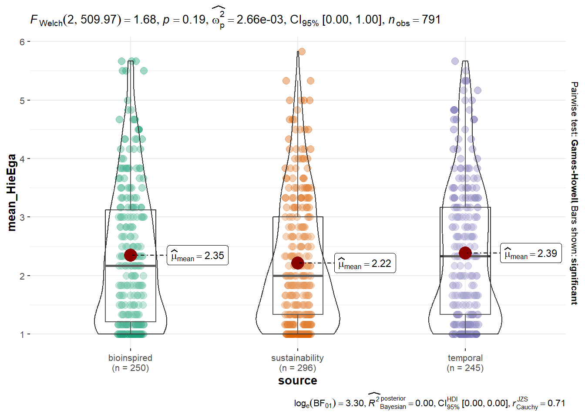
Using the stargazer package you can create nice tables:
#> output to html
setwd("outputs")
stargazer(tmp_desc, type = "html", summary = FALSE, out = "summaryTable.html")| source | N | meanIndCom | sdIndCom | meanHieEga | sdHieEga | |
| 1 | 1 | 250 | 3.26466666666667 | 0.820895398206718 | 2.34933333333333 | 1.18717375565012 |
| 2 | 2 | 296 | 3.25394144144144 | 0.87601619546313 | 2.21734234234234 | 1.09684683900829 |
| 3 | 3 | 245 | 3.30544217687075 | 1.04007467283886 | 2.38775510204082 | 1.21728021578848 |
Overall EFA
Promax rotation, factoring method minimum residual, if scale is a likert scale less or equal than 7 answering options the EFA or parallel analysis is computed over a polychoric correlation to account for non-normality of data (see in detail R-Code “helperFunctions”)
bioinspired data set
#### Overall EFA
regExOverall <- "^A_|^B_"
psych::cor.plot(r = cor(dat_bioinspired[, str_detect(string = colnames(dat_bioinspired),
pattern = regExOverall)]
, use = "pairwise.complete.obs"),
upper = FALSE, xlas = 2, main = "Overall")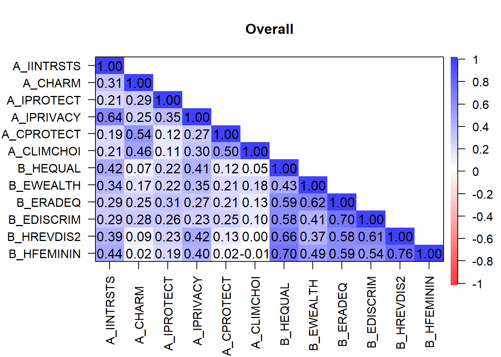
#> parallel analysis
tmp_parallelAnalysis <- dimensionalityTest(label = "Overall",
regEx = regExOverall, dataset = dat_bioinspired)Warning in fa.stats(r = r, f = f, phi = phi, n.obs = n.obs, np.obs = np.obs, :
The estimated weights for the factor scores are probably incorrect. Try a
different factor score estimation method.
Warning in fa.stats(r = r, f = f, phi = phi, n.obs = n.obs, np.obs = np.obs, :
The estimated weights for the factor scores are probably incorrect. Try a
different factor score estimation method.
Warning in fa.stats(r = r, f = f, phi = phi, n.obs = n.obs, np.obs = np.obs, :
The estimated weights for the factor scores are probably incorrect. Try a
different factor score estimation method.Parallel analysis suggests that the number of factors = 3 and the number of components = 2
Overall
Number of components: 2 #> EFA (# of factors=5)
tmp_EFA <- explorativeFactorAnalysis(label = "Overall",
regEx = regExOverall,
dataset = dat_bioinspired, nfac = 2)Warning in fa.stats(r = r, f = f, phi = phi, n.obs = n.obs, np.obs = np.obs, :
The estimated weights for the factor scores are probably incorrect. Try a
different factor score estimation method.tmp_EFA[[1]]Factor Analysis using method = minres
Call: fa(r = tmp_dat, nfactors = nfac, rotate = "promax", cor = "cor")
Standardized loadings (pattern matrix) based upon correlation matrix
MR1 MR2 h2 u2 com
A_IINTRSTS 0.44 0.24 0.34 0.66 1.6
A_CHARM -0.07 0.77 0.54 0.46 1.0
A_IPROTECT 0.25 0.21 0.15 0.85 1.9
A_IPRIVACY 0.41 0.30 0.37 0.63 1.9
A_CPROTECT -0.07 0.72 0.48 0.52 1.0
A_CLIMCHOI -0.15 0.71 0.44 0.56 1.1
B_HEQUAL 0.86 -0.16 0.65 0.35 1.1
B_EWEALTH 0.56 0.10 0.37 0.63 1.1
B_ERADEQ 0.76 0.02 0.59 0.41 1.0
B_EDISCRIM 0.70 0.03 0.51 0.49 1.0
B_HREVDIS2 0.89 -0.19 0.67 0.33 1.1
B_HFEMININ 0.96 -0.30 0.77 0.23 1.2
MR1 MR2
SS loadings 4.10 1.78
Proportion Var 0.34 0.15
Cumulative Var 0.34 0.49
Proportion Explained 0.70 0.30
Cumulative Proportion 0.70 1.00
With factor correlations of
MR1 MR2
MR1 1.00 0.44
MR2 0.44 1.00
Mean item complexity = 1.2
Test of the hypothesis that 2 factors are sufficient.
df null model = 66 with the objective function = 5.87 with Chi Square = 1434.25
df of the model are 43 and the objective function was 1.06
The root mean square of the residuals (RMSR) is 0.07
The df corrected root mean square of the residuals is 0.09
The harmonic n.obs is 250 with the empirical chi square 155.58 with prob < 1.2e-14
The total n.obs was 250 with Likelihood Chi Square = 257.28 with prob < 2.5e-32
Tucker Lewis Index of factoring reliability = 0.758
RMSEA index = 0.141 and the 90 % confidence intervals are 0.125 0.158
BIC = 19.86
Fit based upon off diagonal values = 0.97
Measures of factor score adequacy
MR1 MR2
Correlation of (regression) scores with factors 0.96 0.89
Multiple R square of scores with factors 0.92 0.79
Minimum correlation of possible factor scores 0.84 0.59the factor structure seems too weak
bioinspired data set
#### Overall EFA
regExOverall <- "^A_|^B_"
psych::cor.plot(r = cor(dat_bioinspired[, str_detect(string = colnames(dat_bioinspired),
pattern = regExOverall)]
, use = "pairwise.complete.obs"),
upper = FALSE, xlas = 2, main = "Overall")#> parallel analysis
tmp_parallelAnalysis <- dimensionalityTest(label = "Overall",
regEx = regExOverall, dataset = dat_bioinspired)Warning in fa.stats(r = r, f = f, phi = phi, n.obs = n.obs, np.obs = np.obs, :
The estimated weights for the factor scores are probably incorrect. Try a
different factor score estimation method.Warning in fac(r = r, nfactors = nfactors, n.obs = n.obs, rotate = rotate, : An
ultra-Heywood case was detected. Examine the results carefullyWarning in fa.stats(r = r, f = f, phi = phi, n.obs = n.obs, np.obs = np.obs, :
The estimated weights for the factor scores are probably incorrect. Try a
different factor score estimation method.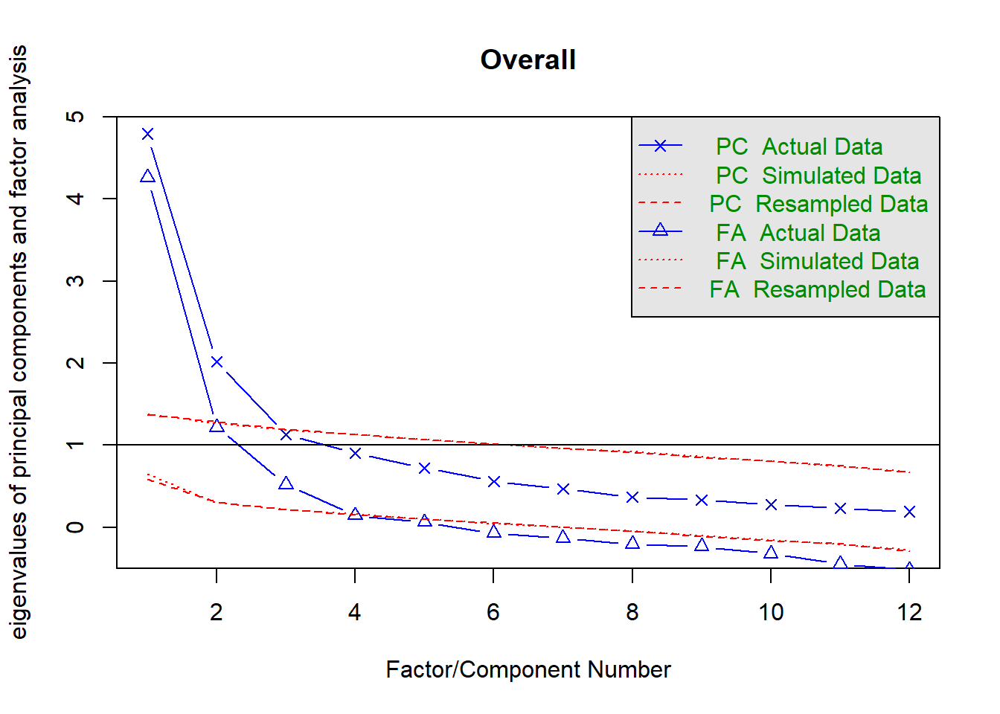
Parallel analysis suggests that the number of factors = 3 and the number of components = 2
Overall
Number of components: 2 #> EFA (# of factors=5)
tmp_EFA <- explorativeFactorAnalysis(label = "Overall",
regEx = regExOverall,
dataset = dat_bioinspired, nfac = 2)Warning in fa.stats(r = r, f = f, phi = phi, n.obs = n.obs, np.obs = np.obs, :
The estimated weights for the factor scores are probably incorrect. Try a
different factor score estimation method.tmp_EFA[[1]]Factor Analysis using method = minres
Call: fa(r = tmp_dat, nfactors = nfac, rotate = "promax", cor = "cor")
Standardized loadings (pattern matrix) based upon correlation matrix
MR1 MR2 h2 u2 com
A_IINTRSTS 0.44 0.24 0.34 0.66 1.6
A_CHARM -0.07 0.77 0.54 0.46 1.0
A_IPROTECT 0.25 0.21 0.15 0.85 1.9
A_IPRIVACY 0.41 0.30 0.37 0.63 1.9
A_CPROTECT -0.07 0.72 0.48 0.52 1.0
A_CLIMCHOI -0.15 0.71 0.44 0.56 1.1
B_HEQUAL 0.86 -0.16 0.65 0.35 1.1
B_EWEALTH 0.56 0.10 0.37 0.63 1.1
B_ERADEQ 0.76 0.02 0.59 0.41 1.0
B_EDISCRIM 0.70 0.03 0.51 0.49 1.0
B_HREVDIS2 0.89 -0.19 0.67 0.33 1.1
B_HFEMININ 0.96 -0.30 0.77 0.23 1.2
MR1 MR2
SS loadings 4.10 1.78
Proportion Var 0.34 0.15
Cumulative Var 0.34 0.49
Proportion Explained 0.70 0.30
Cumulative Proportion 0.70 1.00
With factor correlations of
MR1 MR2
MR1 1.00 0.44
MR2 0.44 1.00
Mean item complexity = 1.2
Test of the hypothesis that 2 factors are sufficient.
df null model = 66 with the objective function = 5.87 with Chi Square = 1434.25
df of the model are 43 and the objective function was 1.06
The root mean square of the residuals (RMSR) is 0.07
The df corrected root mean square of the residuals is 0.09
The harmonic n.obs is 250 with the empirical chi square 155.58 with prob < 1.2e-14
The total n.obs was 250 with Likelihood Chi Square = 257.28 with prob < 2.5e-32
Tucker Lewis Index of factoring reliability = 0.758
RMSEA index = 0.141 and the 90 % confidence intervals are 0.125 0.158
BIC = 19.86
Fit based upon off diagonal values = 0.97
Measures of factor score adequacy
MR1 MR2
Correlation of (regression) scores with factors 0.96 0.89
Multiple R square of scores with factors 0.92 0.79
Minimum correlation of possible factor scores 0.84 0.59temporal data set
#### Overall EFA
regExOverall <- "^A_|^B_"
psych::cor.plot(r = cor(dat_temporal[, str_detect(string = colnames(dat_temporal),
pattern = regExOverall)]
, use = "pairwise.complete.obs"),
upper = FALSE, xlas = 2, main = "Overall")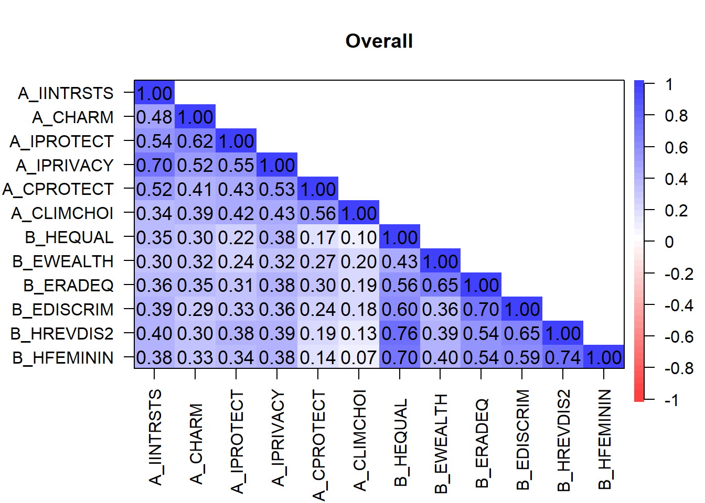
#> parallel analysis
tmp_parallelAnalysis <- dimensionalityTest(label = "Overall",
regEx = regExOverall, dataset = dat_temporal)Warning in fa.stats(r = r, f = f, phi = phi, n.obs = n.obs, np.obs = np.obs, :
The estimated weights for the factor scores are probably incorrect. Try a
different factor score estimation method.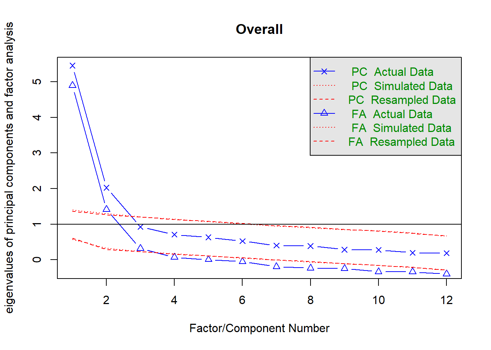
Parallel analysis suggests that the number of factors = 3 and the number of components = 2
Overall
Number of components: 2 #> EFA (# of factors=5)
tmp_EFA <- explorativeFactorAnalysis(label = "Overall",
regEx = regExOverall,
dataset = dat_temporal, nfac = 2)Warning in fa.stats(r = r, f = f, phi = phi, n.obs = n.obs, np.obs = np.obs, :
The estimated weights for the factor scores are probably incorrect. Try a
different factor score estimation method.tmp_EFA[[1]]Factor Analysis using method = minres
Call: fa(r = tmp_dat, nfactors = nfac, rotate = "promax", cor = "cor")
Standardized loadings (pattern matrix) based upon correlation matrix
MR1 MR2 h2 u2 com
A_IINTRSTS 0.16 0.65 0.55 0.45 1.1
A_CHARM 0.10 0.63 0.47 0.53 1.0
A_IPROTECT 0.07 0.68 0.52 0.48 1.0
A_IPRIVACY 0.13 0.72 0.63 0.37 1.1
A_CPROTECT -0.12 0.77 0.51 0.49 1.0
A_CLIMCHOI -0.18 0.71 0.40 0.60 1.1
B_HEQUAL 0.89 -0.12 0.69 0.31 1.0
B_EWEALTH 0.47 0.14 0.31 0.69 1.2
B_ERADEQ 0.70 0.09 0.57 0.43 1.0
B_EDISCRIM 0.75 0.02 0.58 0.42 1.0
B_HREVDIS2 0.88 -0.07 0.72 0.28 1.0
B_HFEMININ 0.85 -0.08 0.66 0.34 1.0
MR1 MR2
SS loadings 3.68 2.94
Proportion Var 0.31 0.24
Cumulative Var 0.31 0.55
Proportion Explained 0.56 0.44
Cumulative Proportion 0.56 1.00
With factor correlations of
MR1 MR2
MR1 1.00 0.51
MR2 0.51 1.00
Mean item complexity = 1.1
Test of the hypothesis that 2 factors are sufficient.
df null model = 66 with the objective function = 6.82 with Chi Square = 1630.78
df of the model are 43 and the objective function was 0.97
The root mean square of the residuals (RMSR) is 0.06
The df corrected root mean square of the residuals is 0.07
The harmonic n.obs is 245 with the empirical chi square 99.49 with prob < 2.3e-06
The total n.obs was 245 with Likelihood Chi Square = 230.35 with prob < 1.9e-27
Tucker Lewis Index of factoring reliability = 0.815
RMSEA index = 0.133 and the 90 % confidence intervals are 0.117 0.151
BIC = -6.2
Fit based upon off diagonal values = 0.98
Measures of factor score adequacy
MR1 MR2
Correlation of (regression) scores with factors 0.96 0.93
Multiple R square of scores with factors 0.91 0.87
Minimum correlation of possible factor scores 0.83 0.73the factor structure seems too weak, even ultra-Heywood case
Descriptives, correlation plot, EFA, CFA for “A: Group (Individualism-Communitarianism)”
Here we could apply a self-written function for example to check the reliability and amount of explained variance for the first factor:
bioinspired data set
regEx <- "^A_"
nameVariable <- "IndividualismCommunitarianism"
dat <- dat_bioinspired
sum(str_detect(string = colnames(dat), pattern = regEx))[1] 6tmp_dat <- na.omit(dat[,str_detect(string = colnames(dat), pattern = regEx)])
tmp <- CFAstats(dataset = tmp_dat, regularExp = regEx, labelLatent = str_remove(string = nameVariable, pattern = "mean_"),
showPlots = TRUE,
computeEFA = TRUE,
computeCFA = TRUE,
computeCFAMplus = FALSE)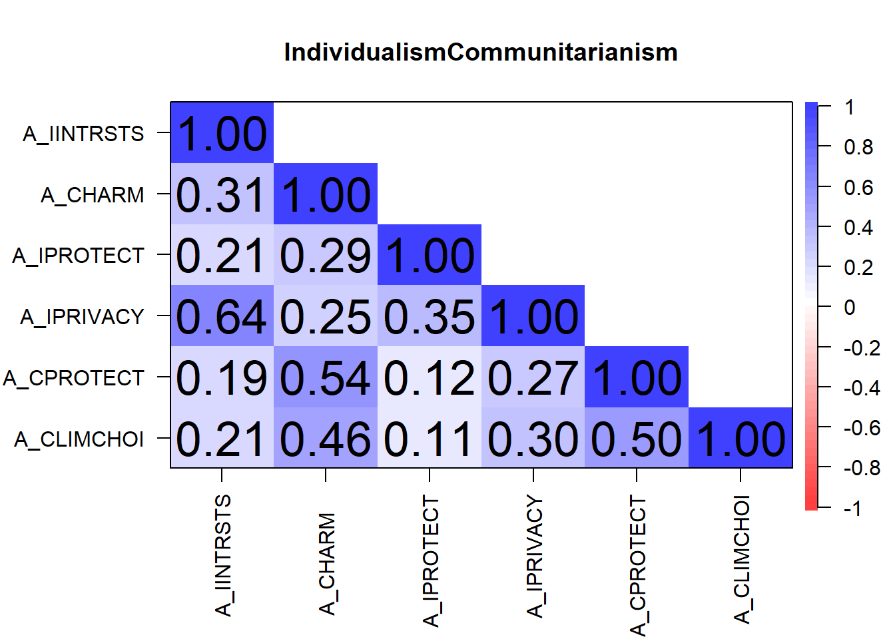
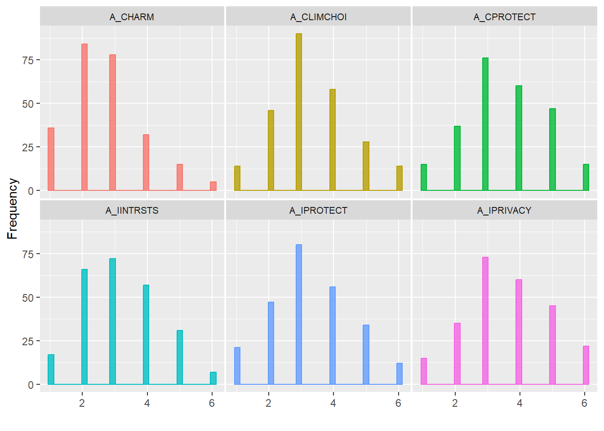
descriptive statistics:
Mean SD Median CoeffofVariation Minimum Maximun Lower Quantile
A_IINTRSTS 3.16 1.22 3 0.39 1 6 1
A_CHARM 2.68 1.17 3 0.44 1 6 1
A_IPROTECT 3.28 1.28 3 0.39 1 6 1
A_IPRIVACY 3.60 1.33 4 0.37 1 6 1
A_CPROTECT 3.53 1.28 3 0.36 1 6 1
A_CLIMCHOI 3.33 1.22 3 0.37 1 6 1
Upper Quantile Skewness Kurtosis(-3) KS-Test
A_IINTRSTS 6 0.25 -0.59 0
A_CHARM 6 0.62 0.12 0
A_IPROTECT 6 0.15 -0.54 0
A_IPRIVACY 6 0.01 -0.66 0
A_CPROTECT 6 -0.01 -0.62 0
A_CLIMCHOI 6 0.28 -0.28 0
variables under investigation: A_IINTRSTS A_CHARM A_IPROTECT A_IPRIVACY A_CPROTECT A_CLIMCHOI
Cronbachs Alpha: 0.74 Parallel analysis suggests that the number of factors = 2 and the number of components = 2
IndividualismCommunitarianism
Number of components: 2
KMO criteria is to low (< .6) for:
A_IINTRSTS A_IPROTECT A_IPRIVACY
mean KMO: 0.63
EFA factor loadings (1 factor solution):
Loadings:
MR1
A_IINTRSTS 0.563
A_CHARM 0.706
A_IPROTECT 0.370
A_IPRIVACY 0.635
A_CPROTECT 0.630
A_CLIMCHOI 0.616
MR1
SS loadings 2.133
Proportion Var 0.355
CFA summary and fit statistics:
lavaan 0.6.17 ended normally after 37 iterations
Estimator ML
Optimization method NLMINB
Number of model parameters 12
Number of observations 250
Model Test User Model:
Standard Scaled
Test Statistic 142.473 128.944
Degrees of freedom 9 9
P-value (Chi-square) 0.000 0.000
Scaling correction factor 1.105
Yuan-Bentler correction (Mplus variant)
Model Test Baseline Model:
Test statistic 403.447 279.260
Degrees of freedom 15 15
P-value 0.000 0.000
Scaling correction factor 1.445
User Model versus Baseline Model:
Comparative Fit Index (CFI) 0.656 0.546
Tucker-Lewis Index (TLI) 0.427 0.244
Robust Comparative Fit Index (CFI) 0.653
Robust Tucker-Lewis Index (TLI) 0.421
Loglikelihood and Information Criteria:
Loglikelihood user model (H0) -2330.487 -2330.487
Scaling correction factor 1.370
for the MLR correction
Loglikelihood unrestricted model (H1) -2259.250 -2259.250
Scaling correction factor 1.256
for the MLR correction
Akaike (AIC) 4684.974 4684.974
Bayesian (BIC) 4727.231 4727.231
Sample-size adjusted Bayesian (SABIC) 4689.190 4689.190
Root Mean Square Error of Approximation:
RMSEA 0.244 0.231
90 Percent confidence interval - lower 0.209 0.198
90 Percent confidence interval - upper 0.280 0.265
P-value H_0: RMSEA <= 0.050 0.000 0.000
P-value H_0: RMSEA >= 0.080 1.000 1.000
Robust RMSEA 0.243
90 Percent confidence interval - lower 0.207
90 Percent confidence interval - upper 0.281
P-value H_0: Robust RMSEA <= 0.050 0.000
P-value H_0: Robust RMSEA >= 0.080 1.000
Standardized Root Mean Square Residual:
SRMR 0.114 0.114
Parameter Estimates:
Standard errors Sandwich
Information bread Observed
Observed information based on Hessian
Latent Variables:
Estimate Std.Err z-value P(>|z|) Std.lv
IndividualismCommunitarianism =~
A_IINTRSTS 1.000 0.586
A_CHARM 1.411 0.470 3.002 0.003 0.827
A_IPROTECT 0.740 0.218 3.387 0.001 0.433
A_IPRIVACY 1.193 0.142 8.407 0.000 0.699
A_CPROTECT 1.463 0.536 2.732 0.006 0.857
A_CLIMCHOI 1.302 0.443 2.943 0.003 0.763
Std.all
0.481
0.709
0.338
0.526
0.669
0.626
Variances:
Estimate Std.Err z-value P(>|z|) Std.lv Std.all
.A_IINTRSTS 1.143 0.186 6.156 0.000 1.143 0.769
.A_CHARM 0.677 0.127 5.322 0.000 0.677 0.498
.A_IPROTECT 1.455 0.152 9.590 0.000 1.455 0.886
.A_IPRIVACY 1.278 0.248 5.158 0.000 1.278 0.723
.A_CPROTECT 0.906 0.175 5.169 0.000 0.906 0.552
.A_CLIMCHOI 0.902 0.143 6.314 0.000 0.902 0.608
IndvdlsmCmmntr 0.343 0.181 1.901 0.057 1.000 1.000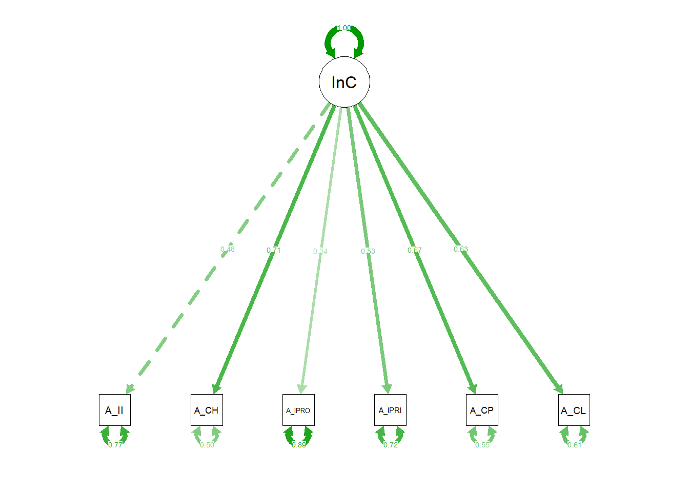
CFA first 6 Modification Indices:
lhs op rhs mi epc sepc.lv sepc.all sepc.nox
16 A_IINTRSTS ~~ A_IPRIVACY 90.288 0.833 0.833 0.689 0.689
20 A_CHARM ~~ A_IPRIVACY 21.824 -0.396 -0.396 -0.425 -0.425
17 A_IINTRSTS ~~ A_CPROTECT 16.665 -0.341 -0.341 -0.335 -0.335
23 A_IPROTECT ~~ A_IPRIVACY 14.694 0.363 0.363 0.266 0.266
21 A_CHARM ~~ A_CPROTECT 13.403 0.335 0.335 0.427 0.427
28 A_CPROTECT ~~ A_CLIMCHOI 12.767 0.315 0.315 0.348 0.348sustainability data set
regEx <- "^A_"
nameVariable <- "IndividualismCommunitarianism"
dat <- dat_sustainability
sum(str_detect(string = colnames(dat), pattern = regEx))[1] 6tmp_dat <- na.omit(dat[,str_detect(string = colnames(dat), pattern = regEx)])
tmp <- CFAstats(dataset = tmp_dat, regularExp = regEx, labelLatent = str_remove(string = nameVariable, pattern = "mean_"),
showPlots = TRUE,
computeEFA = TRUE,
computeCFA = TRUE,
computeCFAMplus = FALSE)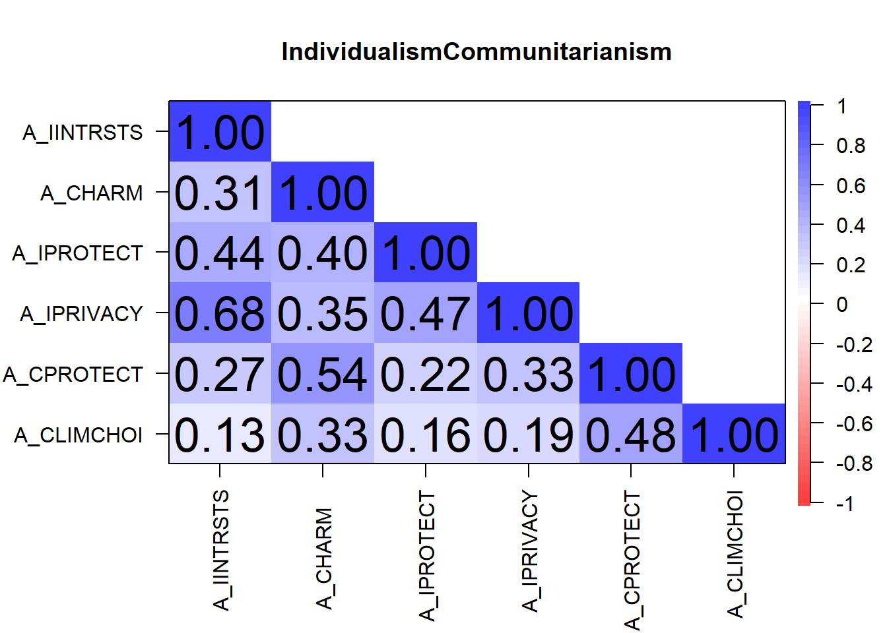
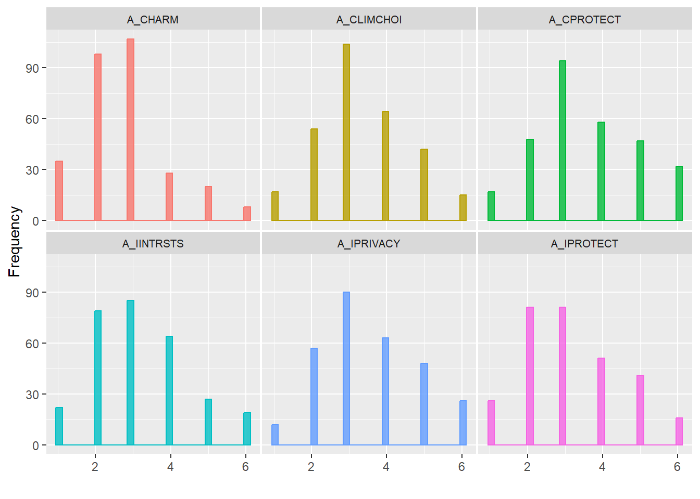
descriptive statistics:
Mean SD Median CoeffofVariation Minimum Maximun Lower Quantile
A_IINTRSTS 3.18 1.30 3 0.41 1 6 1
A_CHARM 2.74 1.16 3 0.42 1 6 1
A_IPROTECT 3.16 1.35 3 0.43 1 6 1
A_IPRIVACY 3.53 1.32 3 0.37 1 6 1
A_CPROTECT 3.56 1.37 3 0.39 1 6 1
A_CLIMCHOI 3.35 1.24 3 0.37 1 6 1
Upper Quantile Skewness Kurtosis(-3) KS-Test
A_IINTRSTS 6 0.42 -0.43 0
A_CHARM 6 0.73 0.43 0
A_IPROTECT 6 0.36 -0.69 0
A_IPRIVACY 6 0.21 -0.73 0
A_CPROTECT 6 0.16 -0.75 0
A_CLIMCHOI 6 0.22 -0.45 0
variables under investigation: A_IINTRSTS A_CHARM A_IPROTECT A_IPRIVACY A_CPROTECT A_CLIMCHOI
Cronbachs Alpha: 0.77 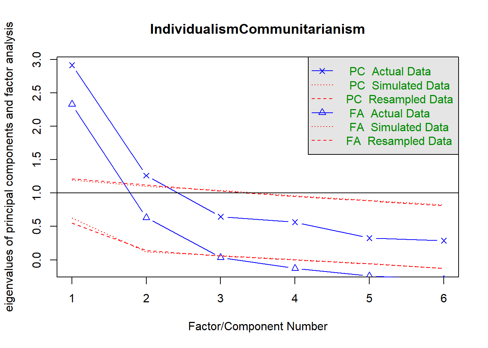
Parallel analysis suggests that the number of factors = 2 and the number of components = 2
IndividualismCommunitarianism
Number of components: 2
EFA factor loadings (1 factor solution):
Loadings:
MR1
A_IINTRSTS 0.652
A_CHARM 0.685
A_IPROTECT 0.598
A_IPRIVACY 0.717
A_CPROTECT 0.617
A_CLIMCHOI 0.426
MR1
SS loadings 2.328
Proportion Var 0.388
CFA summary and fit statistics:
lavaan 0.6.17 ended normally after 25 iterations
Estimator ML
Optimization method NLMINB
Number of model parameters 12
Number of observations 296
Model Test User Model:
Standard Scaled
Test Statistic 141.014 124.570
Degrees of freedom 9 9
P-value (Chi-square) 0.000 0.000
Scaling correction factor 1.132
Yuan-Bentler correction (Mplus variant)
Model Test Baseline Model:
Test statistic 524.342 350.418
Degrees of freedom 15 15
P-value 0.000 0.000
Scaling correction factor 1.496
User Model versus Baseline Model:
Comparative Fit Index (CFI) 0.741 0.655
Tucker-Lewis Index (TLI) 0.568 0.426
Robust Comparative Fit Index (CFI) 0.739
Robust Tucker-Lewis Index (TLI) 0.566
Loglikelihood and Information Criteria:
Loglikelihood user model (H0) -2775.305 -2775.305
Scaling correction factor 1.413
for the MLR correction
Loglikelihood unrestricted model (H1) -2704.798 -2704.798
Scaling correction factor 1.293
for the MLR correction
Akaike (AIC) 5574.609 5574.609
Bayesian (BIC) 5618.894 5618.894
Sample-size adjusted Bayesian (SABIC) 5580.838 5580.838
Root Mean Square Error of Approximation:
RMSEA 0.223 0.208
90 Percent confidence interval - lower 0.191 0.179
90 Percent confidence interval - upper 0.256 0.239
P-value H_0: RMSEA <= 0.050 0.000 0.000
P-value H_0: RMSEA >= 0.080 1.000 1.000
Robust RMSEA 0.222
90 Percent confidence interval - lower 0.188
90 Percent confidence interval - upper 0.257
P-value H_0: Robust RMSEA <= 0.050 0.000
P-value H_0: Robust RMSEA >= 0.080 1.000
Standardized Root Mean Square Residual:
SRMR 0.117 0.117
Parameter Estimates:
Standard errors Sandwich
Information bread Observed
Observed information based on Hessian
Latent Variables:
Estimate Std.Err z-value P(>|z|) Std.lv
IndividualismCommunitarianism =~
A_IINTRSTS 1.000 0.987
A_CHARM 0.607 0.146 4.167 0.000 0.600
A_IPROTECT 0.803 0.117 6.853 0.000 0.792
A_IPRIVACY 1.083 0.077 14.101 0.000 1.069
A_CPROTECT 0.647 0.172 3.766 0.000 0.639
A_CLIMCHOI 0.374 0.147 2.552 0.011 0.369
Std.all
0.759
0.517
0.589
0.813
0.466
0.299
Variances:
Estimate Std.Err z-value P(>|z|) Std.lv Std.all
.A_IINTRSTS 0.718 0.144 4.999 0.000 0.718 0.424
.A_CHARM 0.987 0.144 6.837 0.000 0.987 0.733
.A_IPROTECT 1.183 0.139 8.503 0.000 1.183 0.653
.A_IPRIVACY 0.586 0.132 4.432 0.000 0.586 0.339
.A_CPROTECT 1.473 0.189 7.814 0.000 1.473 0.783
.A_CLIMCHOI 1.390 0.133 10.428 0.000 1.390 0.911
IndvdlsmCmmntr 0.974 0.183 5.331 0.000 1.000 1.000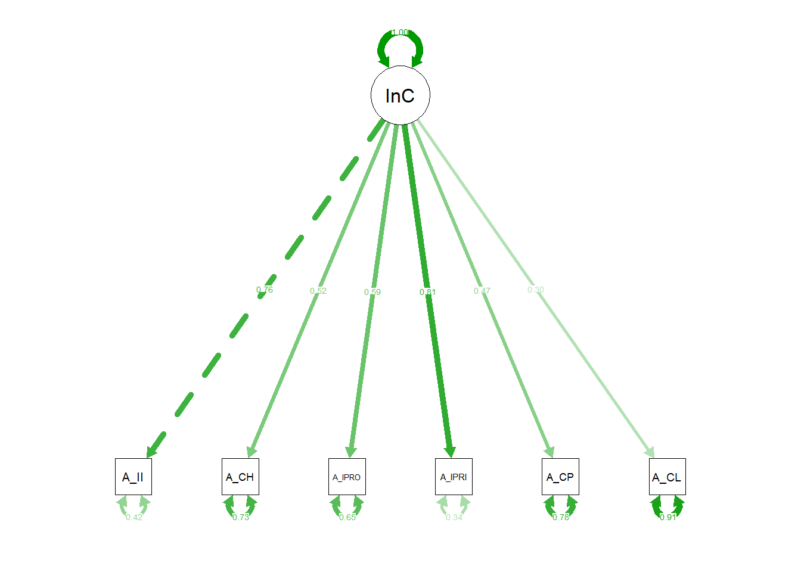
CFA first 6 Modification Indices:
lhs op rhs mi epc sepc.lv sepc.all sepc.nox
16 A_IINTRSTS ~~ A_IPRIVACY 61.793 0.860 0.860 1.326 1.326
21 A_CHARM ~~ A_CPROTECT 55.017 0.566 0.566 0.470 0.470
28 A_CPROTECT ~~ A_CLIMCHOI 51.769 0.626 0.626 0.438 0.438
20 A_CHARM ~~ A_IPRIVACY 16.106 -0.285 -0.285 -0.374 -0.374
22 A_CHARM ~~ A_CLIMCHOI 15.293 0.282 0.282 0.241 0.241
14 A_IINTRSTS ~~ A_CHARM 12.512 -0.241 -0.241 -0.286 -0.286temporal data set
regEx <- "^A_"
nameVariable <- "IndividualismCommunitarianism"
dat <- dat_temporal
sum(str_detect(string = colnames(dat), pattern = regEx))[1] 6tmp_dat <- na.omit(dat[,str_detect(string = colnames(dat), pattern = regEx)])
tmp <- CFAstats(dataset = tmp_dat, regularExp = regEx, labelLatent = str_remove(string = nameVariable, pattern = "mean_"),
showPlots = TRUE,
computeEFA = TRUE,
computeCFA = TRUE,
computeCFAMplus = FALSE)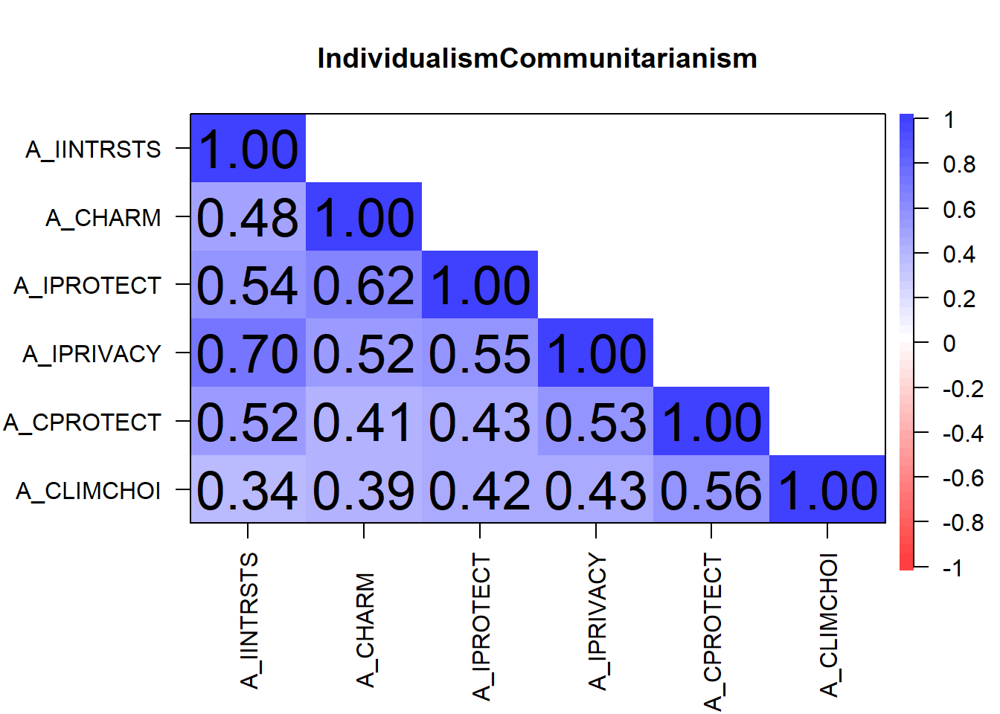
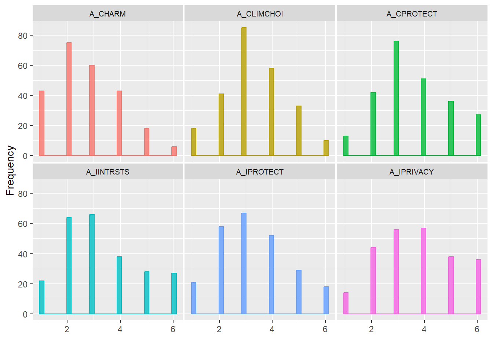
descriptive statistics:
Mean SD Median CoeffofVariation Minimum Maximun Lower Quantile
A_IINTRSTS 3.27 1.47 3 0.45 1 6 1
A_CHARM 2.74 1.28 3 0.47 1 6 1
A_IPROTECT 3.26 1.37 3 0.42 1 6 1
A_IPRIVACY 3.69 1.45 4 0.39 1 6 1
A_CPROTECT 3.56 1.37 3 0.38 1 6 1
A_CLIMCHOI 3.31 1.23 3 0.37 1 6 1
Upper Quantile Skewness Kurtosis(-3) KS-Test
A_IINTRSTS 6 0.41 -0.78 0
A_CHARM 6 0.49 -0.43 0
A_IPROTECT 6 0.29 -0.65 0
A_IPRIVACY 6 0.04 -0.94 0
A_CPROTECT 6 0.19 -0.73 0
A_CLIMCHOI 6 0.11 -0.41 0
variables under investigation: A_IINTRSTS A_CHARM A_IPROTECT A_IPRIVACY A_CPROTECT A_CLIMCHOI
Cronbachs Alpha: 0.86 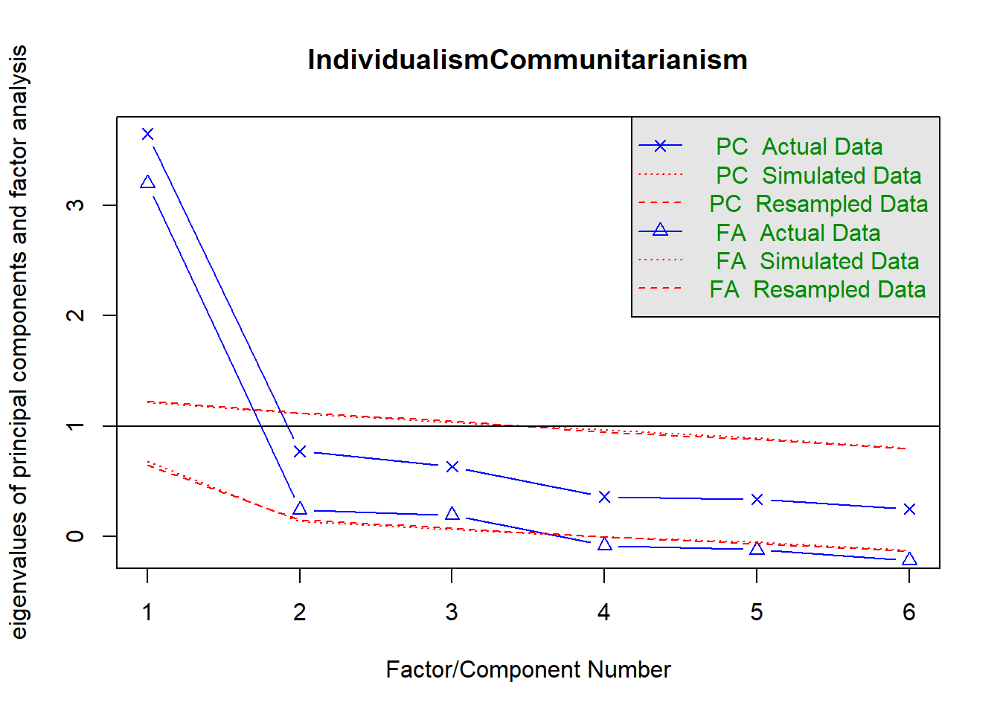
Parallel analysis suggests that the number of factors = 3 and the number of components = 1
IndividualismCommunitarianism
Number of components: 1
EFA factor loadings (1 factor solution):
Loadings:
MR1
A_IINTRSTS 0.752
A_CHARM 0.723
A_IPROTECT 0.744
A_IPRIVACY 0.827
A_CPROTECT 0.708
A_CLIMCHOI 0.613
MR1
SS loadings 3.202
Proportion Var 0.534
CFA summary and fit statistics:
lavaan 0.6.17 ended normally after 21 iterations
Estimator ML
Optimization method NLMINB
Number of model parameters 12
Number of observations 245
Model Test User Model:
Standard Scaled
Test Statistic 69.979 51.886
Degrees of freedom 9 9
P-value (Chi-square) 0.000 0.000
Scaling correction factor 1.349
Yuan-Bentler correction (Mplus variant)
Model Test Baseline Model:
Test statistic 629.675 428.403
Degrees of freedom 15 15
P-value 0.000 0.000
Scaling correction factor 1.470
User Model versus Baseline Model:
Comparative Fit Index (CFI) 0.901 0.896
Tucker-Lewis Index (TLI) 0.835 0.827
Robust Comparative Fit Index (CFI) 0.905
Robust Tucker-Lewis Index (TLI) 0.841
Loglikelihood and Information Criteria:
Loglikelihood user model (H0) -2253.167 -2253.167
Scaling correction factor 1.162
for the MLR correction
Loglikelihood unrestricted model (H1) -2218.177 -2218.177
Scaling correction factor 1.242
for the MLR correction
Akaike (AIC) 4530.334 4530.334
Bayesian (BIC) 4572.349 4572.349
Sample-size adjusted Bayesian (SABIC) 4534.310 4534.310
Root Mean Square Error of Approximation:
RMSEA 0.166 0.139
90 Percent confidence interval - lower 0.131 0.109
90 Percent confidence interval - upper 0.204 0.172
P-value H_0: RMSEA <= 0.050 0.000 0.000
P-value H_0: RMSEA >= 0.080 1.000 0.999
Robust RMSEA 0.162
90 Percent confidence interval - lower 0.121
90 Percent confidence interval - upper 0.206
P-value H_0: Robust RMSEA <= 0.050 0.000
P-value H_0: Robust RMSEA >= 0.080 0.999
Standardized Root Mean Square Residual:
SRMR 0.062 0.062
Parameter Estimates:
Standard errors Sandwich
Information bread Observed
Observed information based on Hessian
Latent Variables:
Estimate Std.Err z-value P(>|z|) Std.lv
IndividualismCommunitarianism =~
A_IINTRSTS 1.000 1.138
A_CHARM 0.756 0.082 9.205 0.000 0.861
A_IPROTECT 0.860 0.081 10.577 0.000 0.979
A_IPRIVACY 1.043 0.064 16.188 0.000 1.187
A_CPROTECT 0.798 0.083 9.587 0.000 0.908
A_CLIMCHOI 0.607 0.091 6.644 0.000 0.691
Std.all
0.776
0.674
0.718
0.818
0.665
0.563
Variances:
Estimate Std.Err z-value P(>|z|) Std.lv Std.all
.A_IINTRSTS 0.854 0.123 6.975 0.000 0.854 0.397
.A_CHARM 0.889 0.122 7.285 0.000 0.889 0.546
.A_IPROTECT 0.900 0.128 7.024 0.000 0.900 0.485
.A_IPRIVACY 0.698 0.103 6.805 0.000 0.698 0.331
.A_CPROTECT 1.038 0.153 6.803 0.000 1.038 0.557
.A_CLIMCHOI 1.028 0.124 8.287 0.000 1.028 0.683
IndvdlsmCmmntr 1.295 0.179 7.234 0.000 1.000 1.000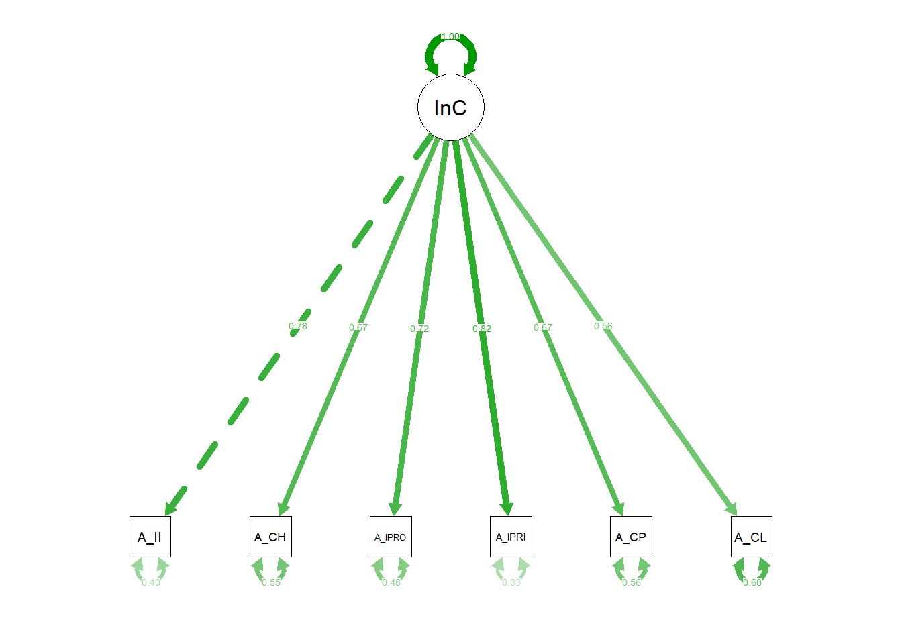
CFA first 6 Modification Indices:
lhs op rhs mi epc sepc.lv sepc.all sepc.nox
28 A_CPROTECT ~~ A_CLIMCHOI 29.120 0.401 0.401 0.388 0.388
19 A_CHARM ~~ A_IPROTECT 27.192 0.367 0.367 0.410 0.410
16 A_IINTRSTS ~~ A_IPRIVACY 25.854 0.432 0.432 0.560 0.560
18 A_IINTRSTS ~~ A_CLIMCHOI 13.448 -0.270 -0.270 -0.288 -0.288
23 A_IPROTECT ~~ A_IPRIVACY 4.867 -0.171 -0.171 -0.215 -0.215
14 A_IINTRSTS ~~ A_CHARM 4.321 -0.153 -0.153 -0.176 -0.176Descriptives, correlation plot, EFA, CFA for “B: Grid (Hierarchy-Egalitarianism)”
Here we could apply a self-written function for example to check the reliability and amount of explained variance for the first factor:
bioinspired data set
regEx <- "^B_"
nameVariable <- "HierarchyEgalitarianism"
dat <- dat_bioinspired
sum(str_detect(string = colnames(dat), pattern = regEx))[1] 6tmp_dat <- na.omit(dat[,str_detect(string = colnames(dat), pattern = regEx)])
tmp <- CFAstats(dataset = tmp_dat, regularExp = regEx, labelLatent = str_remove(string = nameVariable, pattern = "mean_"),
showPlots = TRUE,
computeEFA = TRUE,
computeCFA = TRUE,
computeCFAMplus = FALSE)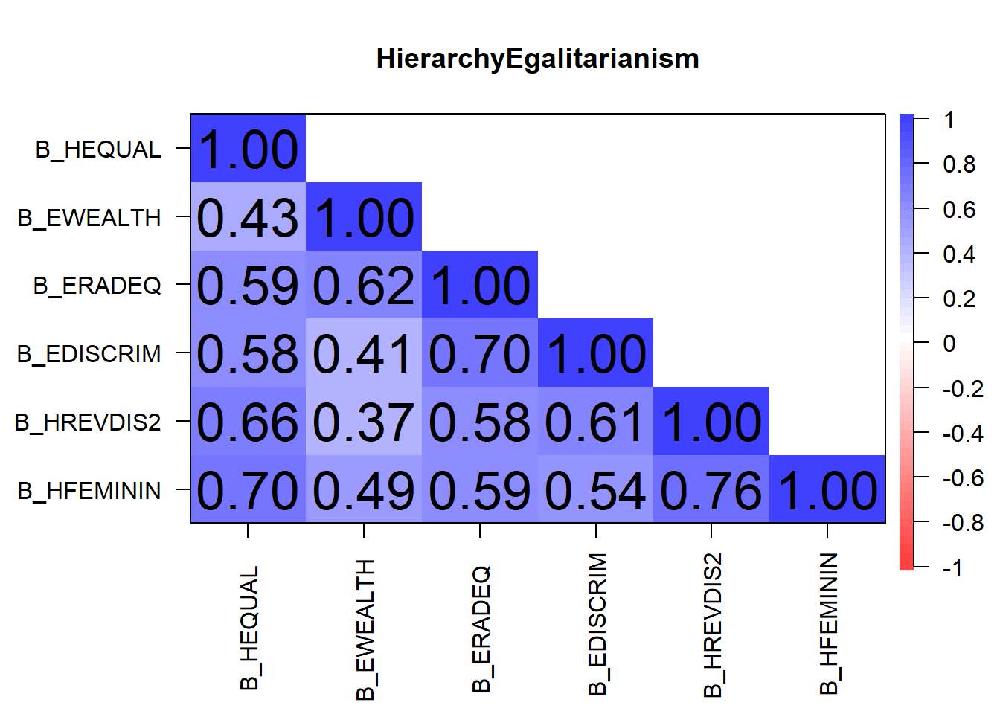
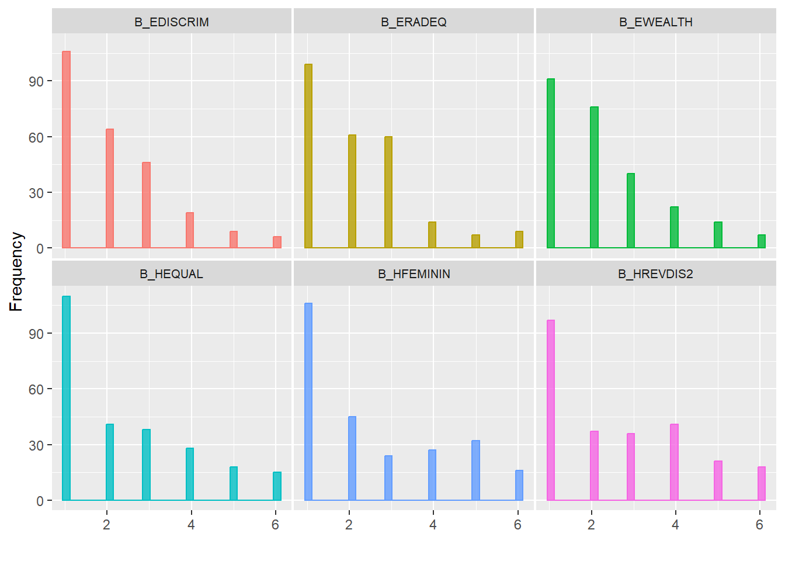
descriptive statistics:
Mean SD Median CoeffofVariation Minimum Maximun Lower Quantile
B_HEQUAL 2.39 1.58 2 0.66 1 6 1
B_EWEALTH 2.25 1.33 2 0.59 1 6 1
B_ERADEQ 2.18 1.29 2 0.59 1 6 1
B_EDISCRIM 2.12 1.27 2 0.60 1 6 1
B_HREVDIS2 2.62 1.65 2 0.63 1 6 1
B_HFEMININ 2.53 1.69 2 0.67 1 6 1
Upper Quantile Skewness Kurtosis(-3) KS-Test
B_HEQUAL 6 0.86 -0.44 0
B_EWEALTH 6 1.05 0.37 0
B_ERADEQ 6 1.14 0.98 0
B_EDISCRIM 6 1.14 0.75 0
B_HREVDIS2 6 0.59 -0.91 0
B_HFEMININ 6 0.71 -0.92 0
variables under investigation: B_HEQUAL B_EWEALTH B_ERADEQ B_EDISCRIM B_HREVDIS2 B_HFEMININ
Cronbachs Alpha: 0.89 Parallel analysis suggests that the number of factors = 2 and the number of components = 1
HierarchyEgalitarianism
Number of components: 1
EFA factor loadings (1 factor solution):
Loadings:
MR1
B_HEQUAL 0.844
B_EWEALTH 0.636
B_ERADEQ 0.845
B_EDISCRIM 0.796
B_HREVDIS2 0.842
B_HFEMININ 0.866
MR1
SS loadings 3.923
Proportion Var 0.654
CFA summary and fit statistics:
lavaan 0.6.17 ended normally after 22 iterations
Estimator ML
Optimization method NLMINB
Number of model parameters 12
Number of observations 250
Model Test User Model:
Standard Scaled
Test Statistic 110.717 70.998
Degrees of freedom 9 9
P-value (Chi-square) 0.000 0.000
Scaling correction factor 1.559
Yuan-Bentler correction (Mplus variant)
Model Test Baseline Model:
Test statistic 895.564 553.808
Degrees of freedom 15 15
P-value 0.000 0.000
Scaling correction factor 1.617
User Model versus Baseline Model:
Comparative Fit Index (CFI) 0.884 0.885
Tucker-Lewis Index (TLI) 0.807 0.808
Robust Comparative Fit Index (CFI) 0.889
Robust Tucker-Lewis Index (TLI) 0.815
Loglikelihood and Information Criteria:
Loglikelihood user model (H0) -2298.734 -2298.734
Scaling correction factor 1.345
for the MLR correction
Loglikelihood unrestricted model (H1) -2243.376 -2243.376
Scaling correction factor 1.437
for the MLR correction
Akaike (AIC) 4621.469 4621.469
Bayesian (BIC) 4663.727 4663.727
Sample-size adjusted Bayesian (SABIC) 4625.685 4625.685
Root Mean Square Error of Approximation:
RMSEA 0.213 0.166
90 Percent confidence interval - lower 0.178 0.138
90 Percent confidence interval - upper 0.249 0.195
P-value H_0: RMSEA <= 0.050 0.000 0.000
P-value H_0: RMSEA >= 0.080 1.000 1.000
Robust RMSEA 0.207
90 Percent confidence interval - lower 0.164
90 Percent confidence interval - upper 0.253
P-value H_0: Robust RMSEA <= 0.050 0.000
P-value H_0: Robust RMSEA >= 0.080 1.000
Standardized Root Mean Square Residual:
SRMR 0.063 0.063
Parameter Estimates:
Standard errors Sandwich
Information bread Observed
Observed information based on Hessian
Latent Variables:
Estimate Std.Err z-value P(>|z|) Std.lv
HierarchyEgalitarianism =~
B_HEQUAL 1.000 1.265
B_EWEALTH 0.603 0.078 7.758 0.000 0.763
B_ERADEQ 0.780 0.066 11.736 0.000 0.986
B_EDISCRIM 0.735 0.069 10.618 0.000 0.930
B_HREVDIS2 1.076 0.064 16.875 0.000 1.361
B_HFEMININ 1.128 0.066 16.972 0.000 1.427
Std.all
0.801
0.575
0.767
0.734
0.827
0.845
Variances:
Estimate Std.Err z-value P(>|z|) Std.lv Std.all
.B_HEQUAL 0.893 0.159 5.626 0.000 0.893 0.358
.B_EWEALTH 1.182 0.140 8.467 0.000 1.182 0.670
.B_ERADEQ 0.681 0.093 7.298 0.000 0.681 0.412
.B_EDISCRIM 0.741 0.108 6.846 0.000 0.741 0.461
.B_HREVDIS2 0.854 0.121 7.034 0.000 0.854 0.315
.B_HFEMININ 0.813 0.127 6.393 0.000 0.813 0.285
HrrchyEgltrnsm 1.601 0.190 8.413 0.000 1.000 1.000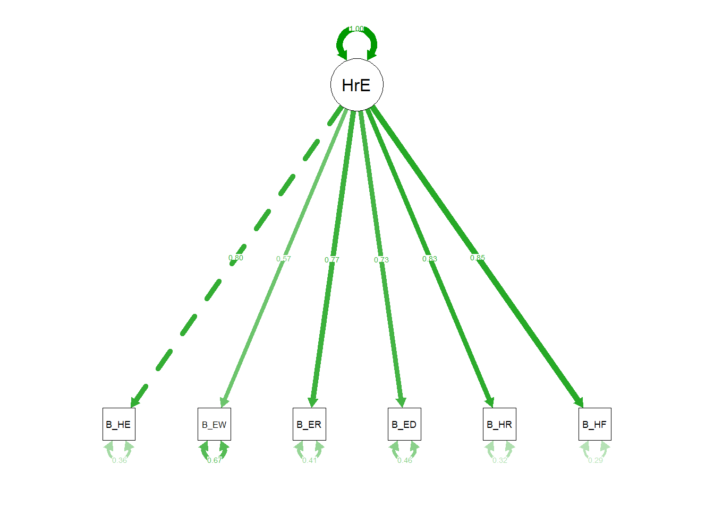
CFA first 6 Modification Indices:
lhs op rhs mi epc sepc.lv sepc.all sepc.nox
19 B_EWEALTH ~~ B_ERADEQ 39.040 0.402 0.402 0.448 0.448
23 B_ERADEQ ~~ B_EDISCRIM 36.925 0.331 0.331 0.466 0.466
28 B_HREVDIS2 ~~ B_HFEMININ 29.148 0.459 0.459 0.551 0.551
27 B_EDISCRIM ~~ B_HFEMININ 23.130 -0.323 -0.323 -0.416 -0.416
21 B_EWEALTH ~~ B_HREVDIS2 17.406 -0.319 -0.319 -0.318 -0.318
25 B_ERADEQ ~~ B_HFEMININ 13.302 -0.245 -0.245 -0.329 -0.329sustainability data set
regEx <- "^B_"
nameVariable <- "HierarchyEgalitarianism"
dat <- dat_sustainability
sum(str_detect(string = colnames(dat), pattern = regEx))[1] 6tmp_dat <- na.omit(dat[,str_detect(string = colnames(dat), pattern = regEx)])
tmp <- CFAstats(dataset = tmp_dat, regularExp = regEx, labelLatent = str_remove(string = nameVariable, pattern = "mean_"),
showPlots = TRUE,
computeEFA = TRUE,
computeCFA = TRUE,
computeCFAMplus = FALSE)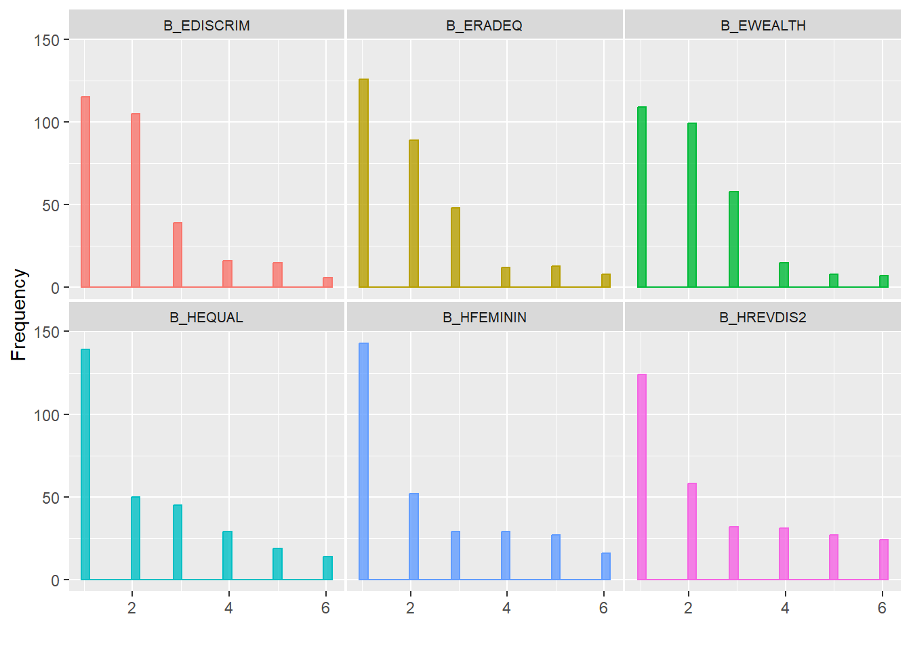
descriptive statistics:
Mean SD Median CoeffofVariation Minimum Maximun Lower Quantile
B_HEQUAL 2.26 1.51 2 0.67 1 6 1
B_EWEALTH 2.10 1.18 2 0.56 1 6 1
B_ERADEQ 2.06 1.26 2 0.61 1 6 1
B_EDISCRIM 2.08 1.23 2 0.59 1 6 1
B_HREVDIS2 2.50 1.68 2 0.67 1 6 1
B_HFEMININ 2.30 1.61 2 0.70 1 6 1
Upper Quantile Skewness Kurtosis(-3) KS-Test
B_HEQUAL 6 1.00 -0.12 0
B_EWEALTH 6 1.26 1.57 0
B_ERADEQ 6 1.37 1.46 0
B_EDISCRIM 6 1.33 1.29 0
B_HREVDIS2 6 0.82 -0.68 0
B_HFEMININ 6 0.97 -0.39 0
variables under investigation: B_HEQUAL B_EWEALTH B_ERADEQ B_EDISCRIM B_HREVDIS2 B_HFEMININ
Cronbachs Alpha: 0.86 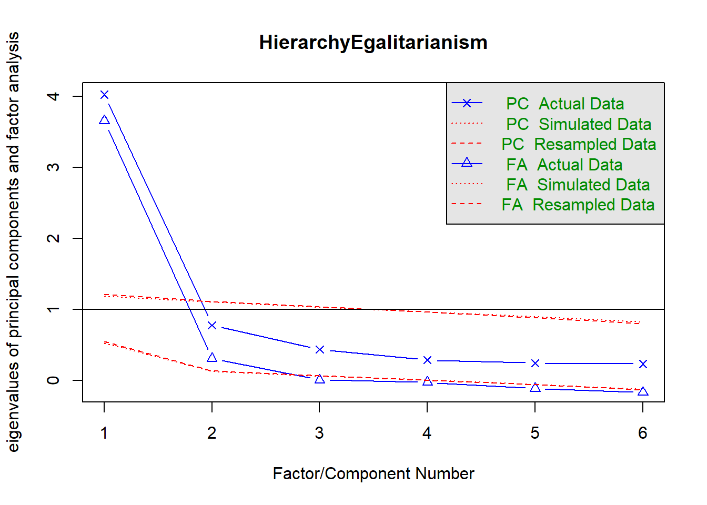
Parallel analysis suggests that the number of factors = 2 and the number of components = 1
HierarchyEgalitarianism
Number of components: 1
EFA factor loadings (1 factor solution):
Loadings:
MR1
B_HEQUAL 0.839
B_EWEALTH 0.579
B_ERADEQ 0.814
B_EDISCRIM 0.812
B_HREVDIS2 0.802
B_HFEMININ 0.808
MR1
SS loadings 3.656
Proportion Var 0.609
CFA summary and fit statistics:
lavaan 0.6.17 ended normally after 20 iterations
Estimator ML
Optimization method NLMINB
Number of model parameters 12
Number of observations 296
Model Test User Model:
Standard Scaled
Test Statistic 60.958 39.704
Degrees of freedom 9 9
P-value (Chi-square) 0.000 0.000
Scaling correction factor 1.535
Yuan-Bentler correction (Mplus variant)
Model Test Baseline Model:
Test statistic 810.479 474.558
Degrees of freedom 15 15
P-value 0.000 0.000
Scaling correction factor 1.708
User Model versus Baseline Model:
Comparative Fit Index (CFI) 0.935 0.933
Tucker-Lewis Index (TLI) 0.891 0.889
Robust Comparative Fit Index (CFI) 0.940
Robust Tucker-Lewis Index (TLI) 0.900
Loglikelihood and Information Criteria:
Loglikelihood user model (H0) -2735.732 -2735.732
Scaling correction factor 1.614
for the MLR correction
Loglikelihood unrestricted model (H1) -2705.253 -2705.253
Scaling correction factor 1.580
for the MLR correction
Akaike (AIC) 5495.464 5495.464
Bayesian (BIC) 5539.749 5539.749
Sample-size adjusted Bayesian (SABIC) 5501.693 5501.693
Root Mean Square Error of Approximation:
RMSEA 0.140 0.107
90 Percent confidence interval - lower 0.108 0.081
90 Percent confidence interval - upper 0.174 0.136
P-value H_0: RMSEA <= 0.050 0.000 0.000
P-value H_0: RMSEA >= 0.080 0.999 0.954
Robust RMSEA 0.133
90 Percent confidence interval - lower 0.092
90 Percent confidence interval - upper 0.177
P-value H_0: Robust RMSEA <= 0.050 0.001
P-value H_0: Robust RMSEA >= 0.080 0.983
Standardized Root Mean Square Residual:
SRMR 0.052 0.052
Parameter Estimates:
Standard errors Sandwich
Information bread Observed
Observed information based on Hessian
Latent Variables:
Estimate Std.Err z-value P(>|z|) Std.lv
HierarchyEgalitarianism =~
B_HEQUAL 1.000 1.168
B_EWEALTH 0.504 0.078 6.483 0.000 0.589
B_ERADEQ 0.783 0.077 10.171 0.000 0.915
B_EDISCRIM 0.819 0.080 10.203 0.000 0.957
B_HREVDIS2 1.109 0.070 15.812 0.000 1.295
B_HFEMININ 1.039 0.075 13.800 0.000 1.214
Std.all
0.774
0.502
0.729
0.779
0.772
0.757
Variances:
Estimate Std.Err z-value P(>|z|) Std.lv Std.all
.B_HEQUAL 0.916 0.158 5.805 0.000 0.916 0.401
.B_EWEALTH 1.031 0.118 8.737 0.000 1.031 0.748
.B_ERADEQ 0.738 0.113 6.523 0.000 0.738 0.469
.B_EDISCRIM 0.594 0.092 6.429 0.000 0.594 0.393
.B_HREVDIS2 1.140 0.170 6.712 0.000 1.140 0.405
.B_HFEMININ 1.095 0.158 6.946 0.000 1.095 0.426
HrrchyEgltrnsm 1.365 0.178 7.661 0.000 1.000 1.000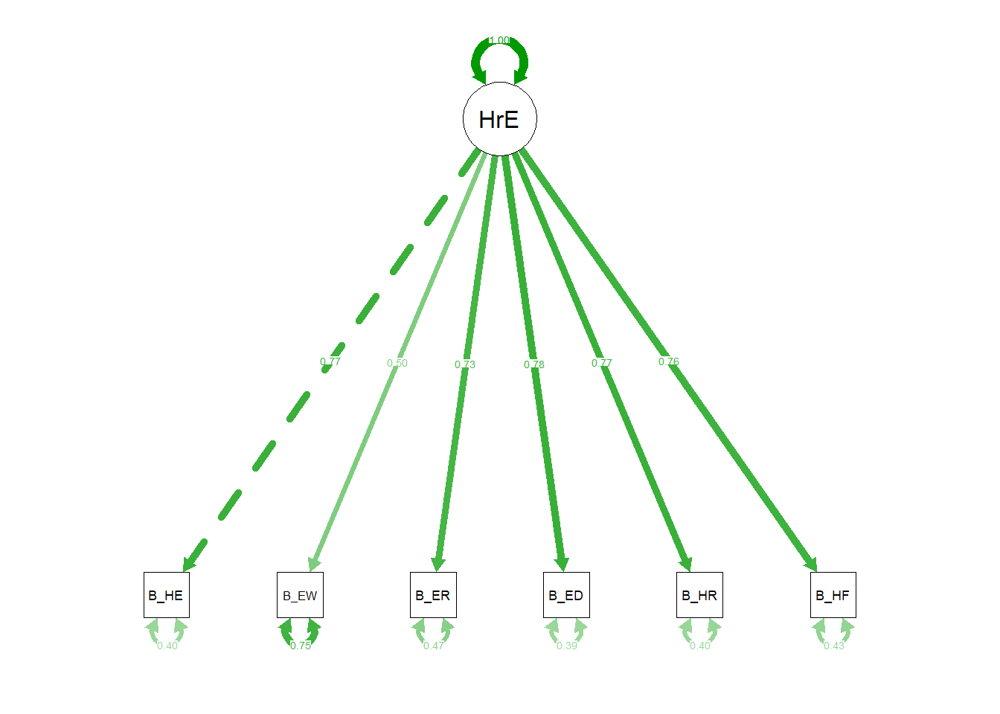
CFA first 6 Modification Indices:
lhs op rhs mi epc sepc.lv sepc.all sepc.nox
19 B_EWEALTH ~~ B_ERADEQ 23.905 0.281 0.281 0.322 0.322
23 B_ERADEQ ~~ B_EDISCRIM 21.659 0.241 0.241 0.364 0.364
28 B_HREVDIS2 ~~ B_HFEMININ 18.887 0.390 0.390 0.349 0.349
25 B_ERADEQ ~~ B_HFEMININ 10.651 -0.222 -0.222 -0.247 -0.247
21 B_EWEALTH ~~ B_HREVDIS2 9.111 -0.223 -0.223 -0.205 -0.205
24 B_ERADEQ ~~ B_HREVDIS2 7.761 -0.197 -0.197 -0.215 -0.215temporal data set
regEx <- "^B_"
nameVariable <- "HierarchyEgalitarianism"
dat <- dat_temporal
sum(str_detect(string = colnames(dat), pattern = regEx))[1] 6tmp_dat <- na.omit(dat[,str_detect(string = colnames(dat), pattern = regEx)])
tmp <- CFAstats(dataset = tmp_dat, regularExp = regEx, labelLatent = str_remove(string = nameVariable, pattern = "mean_"),
showPlots = TRUE,
computeEFA = TRUE,
computeCFA = TRUE,
computeCFAMplus = FALSE)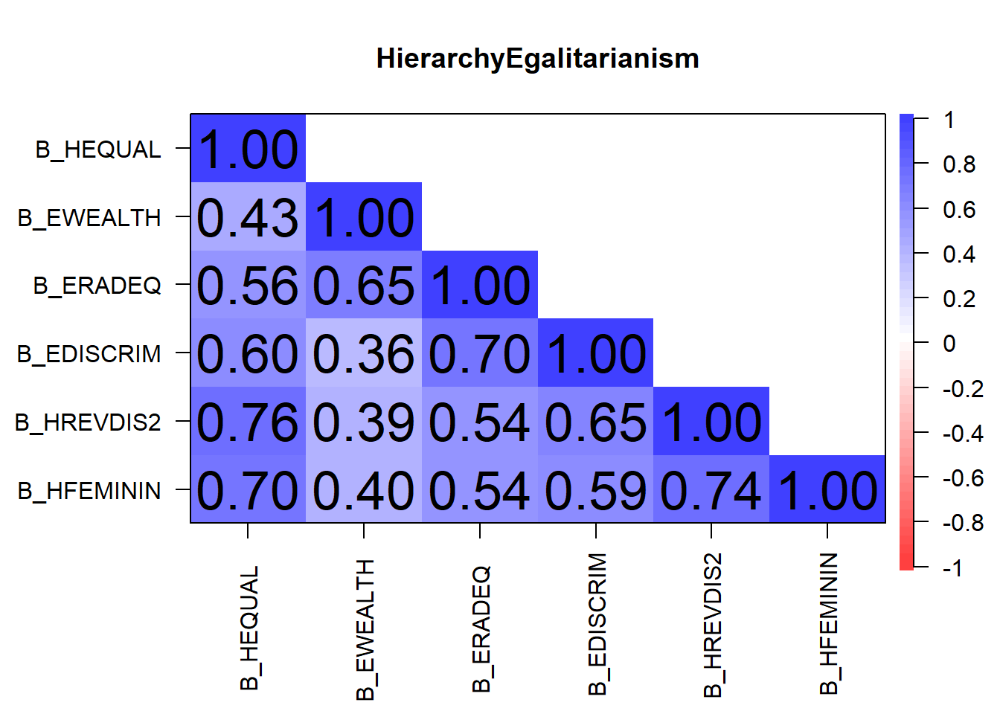
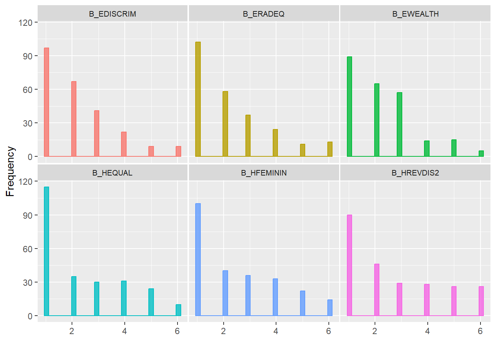
descriptive statistics:
Mean SD Median CoeffofVariation Minimum Maximun Lower Quantile
B_HEQUAL 2.36 1.58 2 0.67 1 6 1
B_EWEALTH 2.25 1.28 2 0.57 1 6 1
B_ERADEQ 2.28 1.46 2 0.64 1 6 1
B_EDISCRIM 2.21 1.34 2 0.61 1 6 1
B_HREVDIS2 2.72 1.76 2 0.65 1 6 1
B_HFEMININ 2.51 1.60 2 0.64 1 6 1
Upper Quantile Skewness Kurtosis(-3) KS-Test
B_HEQUAL 6 0.80 -0.69 0
B_EWEALTH 6 0.97 0.36 0
B_ERADEQ 6 1.07 0.22 0
B_EDISCRIM 6 1.12 0.61 0
B_HREVDIS2 6 0.61 -1.02 0
B_HFEMININ 6 0.70 -0.75 0
variables under investigation: B_HEQUAL B_EWEALTH B_ERADEQ B_EDISCRIM B_HREVDIS2 B_HFEMININ
Cronbachs Alpha: 0.89 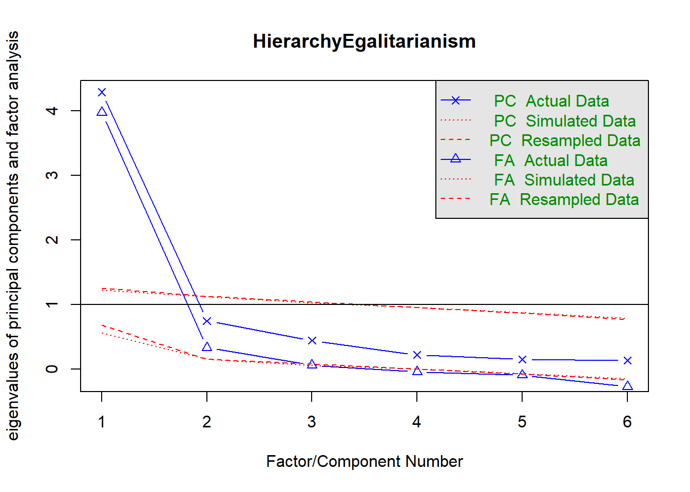
Parallel analysis suggests that the number of factors = 2 and the number of components = 1
HierarchyEgalitarianism
Number of components: 1
EFA factor loadings (1 factor solution):
Loadings:
MR1
B_HEQUAL 0.875
B_EWEALTH 0.629
B_ERADEQ 0.817
B_EDISCRIM 0.815
B_HREVDIS2 0.880
B_HFEMININ 0.841
MR1
SS loadings 3.974
Proportion Var 0.662
CFA summary and fit statistics:
lavaan 0.6.17 ended normally after 23 iterations
Estimator ML
Optimization method NLMINB
Number of model parameters 12
Number of observations 245
Model Test User Model:
Standard Scaled
Test Statistic 137.180 90.705
Degrees of freedom 9 9
P-value (Chi-square) 0.000 0.000
Scaling correction factor 1.512
Yuan-Bentler correction (Mplus variant)
Model Test Baseline Model:
Test statistic 917.174 569.683
Degrees of freedom 15 15
P-value 0.000 0.000
Scaling correction factor 1.610
User Model versus Baseline Model:
Comparative Fit Index (CFI) 0.858 0.853
Tucker-Lewis Index (TLI) 0.763 0.755
Robust Comparative Fit Index (CFI) 0.862
Robust Tucker-Lewis Index (TLI) 0.769
Loglikelihood and Information Criteria:
Loglikelihood user model (H0) -2286.206 -2286.206
Scaling correction factor 1.325
for the MLR correction
Loglikelihood unrestricted model (H1) -2217.616 -2217.616
Scaling correction factor 1.405
for the MLR correction
Akaike (AIC) 4596.412 4596.412
Bayesian (BIC) 4638.427 4638.427
Sample-size adjusted Bayesian (SABIC) 4600.388 4600.388
Root Mean Square Error of Approximation:
RMSEA 0.241 0.192
90 Percent confidence interval - lower 0.206 0.164
90 Percent confidence interval - upper 0.278 0.222
P-value H_0: RMSEA <= 0.050 0.000 0.000
P-value H_0: RMSEA >= 0.080 1.000 1.000
Robust RMSEA 0.237
90 Percent confidence interval - lower 0.194
90 Percent confidence interval - upper 0.282
P-value H_0: Robust RMSEA <= 0.050 0.000
P-value H_0: Robust RMSEA >= 0.080 1.000
Standardized Root Mean Square Residual:
SRMR 0.077 0.077
Parameter Estimates:
Standard errors Sandwich
Information bread Observed
Observed information based on Hessian
Latent Variables:
Estimate Std.Err z-value P(>|z|) Std.lv
HierarchyEgalitarianism =~
B_HEQUAL 1.000 1.329
B_EWEALTH 0.506 0.072 7.043 0.000 0.673
B_ERADEQ 0.782 0.077 10.138 0.000 1.039
B_EDISCRIM 0.763 0.075 10.136 0.000 1.014
B_HREVDIS2 1.142 0.052 21.912 0.000 1.517
B_HFEMININ 0.987 0.068 14.551 0.000 1.312
Std.all
0.840
0.525
0.711
0.756
0.865
0.820
Variances:
Estimate Std.Err z-value P(>|z|) Std.lv Std.all
.B_HEQUAL 0.734 0.117 6.296 0.000 0.734 0.294
.B_EWEALTH 1.187 0.133 8.935 0.000 1.187 0.724
.B_ERADEQ 1.055 0.141 7.468 0.000 1.055 0.494
.B_EDISCRIM 0.770 0.106 7.246 0.000 0.770 0.428
.B_HREVDIS2 0.772 0.118 6.540 0.000 0.772 0.251
.B_HFEMININ 0.839 0.133 6.335 0.000 0.839 0.328
HrrchyEgltrnsm 1.766 0.207 8.522 0.000 1.000 1.000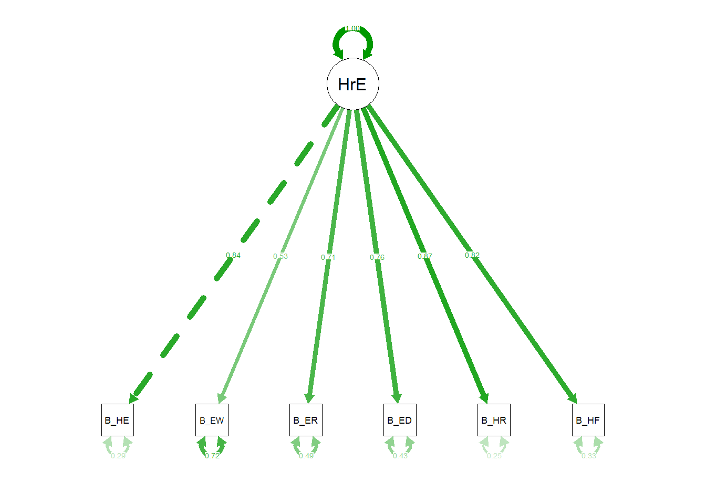
CFA first 6 Modification Indices:
lhs op rhs mi epc sepc.lv sepc.all sepc.nox
19 B_EWEALTH ~~ B_ERADEQ 63.430 0.617 0.617 0.551 0.551
23 B_ERADEQ ~~ B_EDISCRIM 40.496 0.429 0.429 0.475 0.475
24 B_ERADEQ ~~ B_HREVDIS2 20.374 -0.358 -0.358 -0.396 -0.396
28 B_HREVDIS2 ~~ B_HFEMININ 9.631 0.262 0.262 0.326 0.326
21 B_EWEALTH ~~ B_HREVDIS2 9.604 -0.237 -0.237 -0.247 -0.247
17 B_HEQUAL ~~ B_HREVDIS2 8.528 0.246 0.246 0.326 0.326Item Response Theory (polytomous) for “A: Group (Individualism-Communitarianism)”
Factor Loadings (F1) indicate how strongly each item is associated with the latent trait, rule of thumb:
- 0.70 = strong
- 0.40–0.69 = moderate
- < 0.40 = weak
Communality (h²) is the proportion of variance in each item explained by the factor, rule of thumb: + h² > 0.40 → item is well represented + h² < 0.30 → potentially problematic item
bioinspired data set
# Choose dataset and regular expression
dat <- dat_bioinspired
regEx <- "^A_"
# Filter variables matching the pattern
irt_items <- dat[, str_detect(colnames(dat), pattern = regEx)]
# Drop rows with missing data (mirt requires complete cases)
irt_items <- na.omit(irt_items)
# Ensure all items are treated as ordered factors
irt_items[] <- lapply(irt_items, function(x) as.numeric(as.character(x)))
# Fit Graded Response Model (1-factor)
mod_grm <- mirt(data = irt_items, model = 1, itemtype = "graded", verbose = FALSE)
# Summarize model
summary(mod_grm) F1 h2
A_IINTRSTS 0.524 0.274
A_CHARM 0.769 0.592
A_IPROTECT 0.398 0.158
A_IPRIVACY 0.588 0.345
A_CPROTECT 0.724 0.525
A_CLIMCHOI 0.709 0.502
SS loadings: 2.397
Proportion Var: 0.399
Factor correlations:
F1
F1 1# Plot Item Characteristic Curves (ICCs) for all items
plot(mod_grm, type = "trace", facet_items = TRUE, main = "Item Characteristic Curves")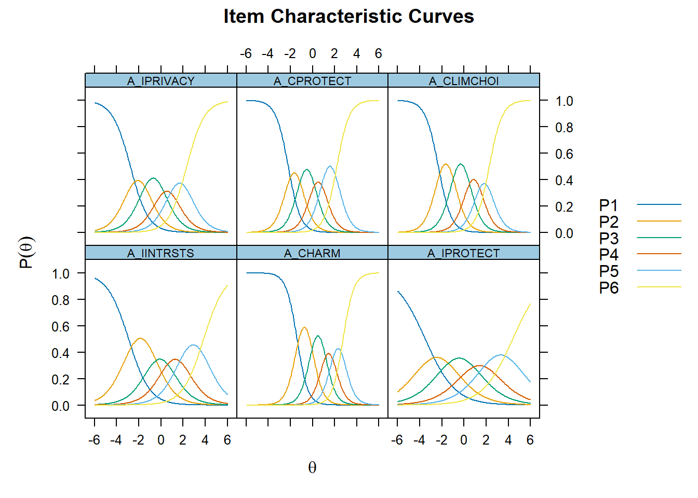
# Plot Test Information Curve
plot(mod_grm, type = "info", main = "Test Information Curve: Individualism–Communitarianism")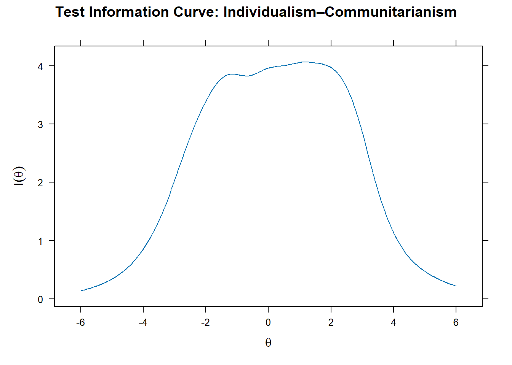
### compare results to:
cor.plot(r = cor(irt_items))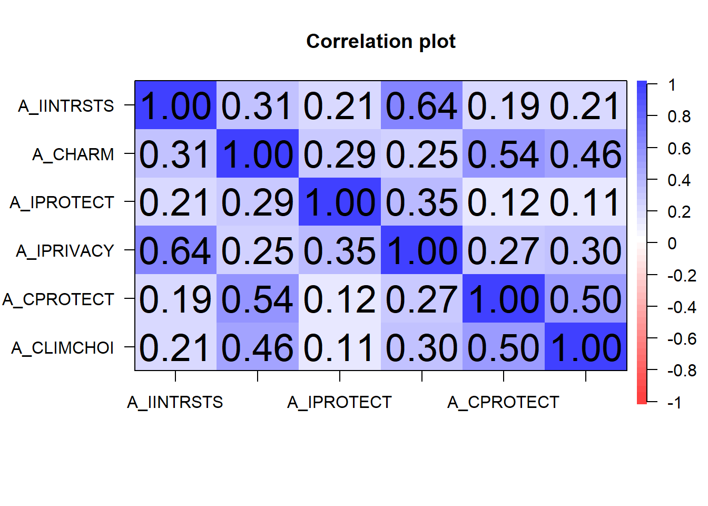
Compare 1-Factor vs. 2-Factor Models:
mod_1f <- mirt(data = irt_items, model = 1, itemtype = "graded", verbose = FALSE)
mod_2f <- mirt(data = irt_items, model = 2, itemtype = "graded", verbose = FALSE)
anova(mod_1f, mod_2f) AIC SABIC HQ BIC logLik X2 df p
mod_1f 4600.444 4613.093 4651.466 4727.217 -2264.222
mod_2f 4500.184 4514.590 4558.292 4644.564 -2209.092 110.26 5 0significant p-value (e.g., < .05) supports the 2-factor model.
summary(mod_2f)
Rotation: oblimin
Rotated factor loadings:
F1 F2 h2
A_IINTRSTS -0.00450 0.7770 0.601
A_CHARM 0.72260 0.0711 0.572
A_IPROTECT 0.10666 0.3839 0.194
A_IPRIVACY -0.00108 0.9104 0.828
A_CPROTECT 0.85698 -0.0584 0.694
A_CLIMCHOI 0.72764 0.0329 0.551
Rotated SS loadings: 1.797 1.589
Factor correlations:
F1 F2
F1 1.000
F2 0.434 1latent class analysis for “A: Group (Individualism-Communitarianism)”
over complete data set:
setwd("outputs")
# Prepare data
if(runLCA){
LCA_dat <- dat_combined_long[, c("CASE", str_subset(colnames(dat_combined_long), "^A_"))]
tmp <- str_subset(colnames(LCA_dat), "^A_")
colnames(LCA_dat)[-1] <- str_remove_all(tmp, "^A_")
# Ensure all variables are treated as categorical (factors)
LCA_dat[] <- lapply(LCA_dat, function(x) as.factor(as.character(x)))
# Drop rows with missing data
LCA_dat <- na.omit(LCA_dat)
# Create formula for poLCA
lca_vars <- colnames(LCA_dat)[-1]
f <- as.formula(paste("cbind(", paste(lca_vars, collapse = ", "), ") ~ 1"))
# Run poLCA models for 2 to LCArunsDef classes
list_lca_IndCom <- list()
set.seed(123) # for reproducibility
for (i in 2:LCArunsDef) {
cat("Fitting", i, "class model...\n")
lca_model <- poLCA(f, data = LCA_dat, nclass = i, maxiter = 5000,
nrep = nRep_def, verbose = FALSE,
na.rm = TRUE)
list_lca_IndCom[[i-1]] <- lca_model
}
# Save results
saveRDS(list_lca_IndCom, file = "list_lca_IndCom.rds")
} else {
list_lca_IndCom <- readRDS("list_lca_IndCom.rds" )
}Fitting 2 class model...
Fitting 3 class model...
Fitting 4 class model...
Fitting 5 class model...
Fitting 6 class model...get fit statistics LCA:
getLCAfitstatistics(listLCAoutput = list_lca_IndCom)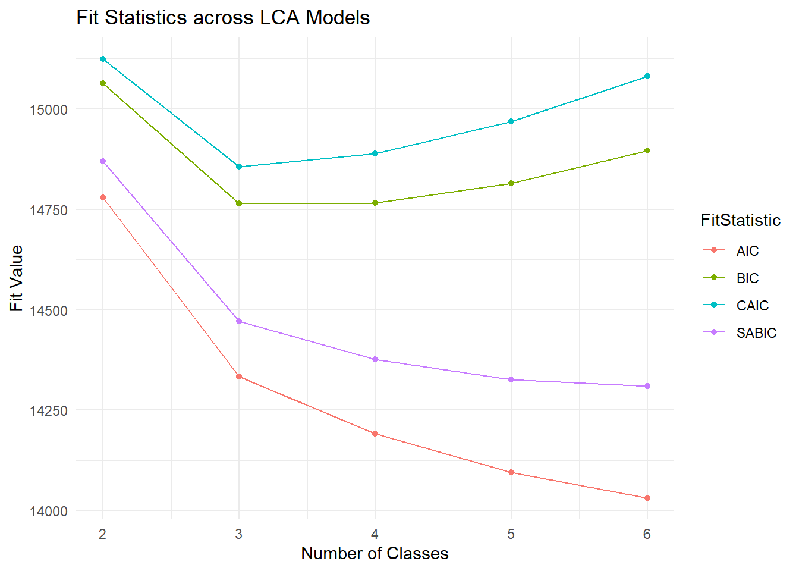
Classes LL AIC BIC SABIC CAIC Entropy
1 2 -7328.362 14778.72 15063.79 14870.09 15124.79 0.7779627
2 3 -7075.011 14334.02 14763.96 14471.82 14855.96 0.7906235
3 4 -6972.782 14191.56 14766.38 14375.79 14889.38 0.7850875
4 5 -6893.408 14094.82 14814.50 14325.47 14968.50 0.8039220
5 6 -6831.031 14032.06 14896.62 14309.15 15081.62 0.8114722plot_poLCA_profile(
list_lca_IndCom[[2]],
class_labels = c("Class 1", "Class 2", "Class 3"),
title = "LCA Response Probabilities (3-Class Solution)"
)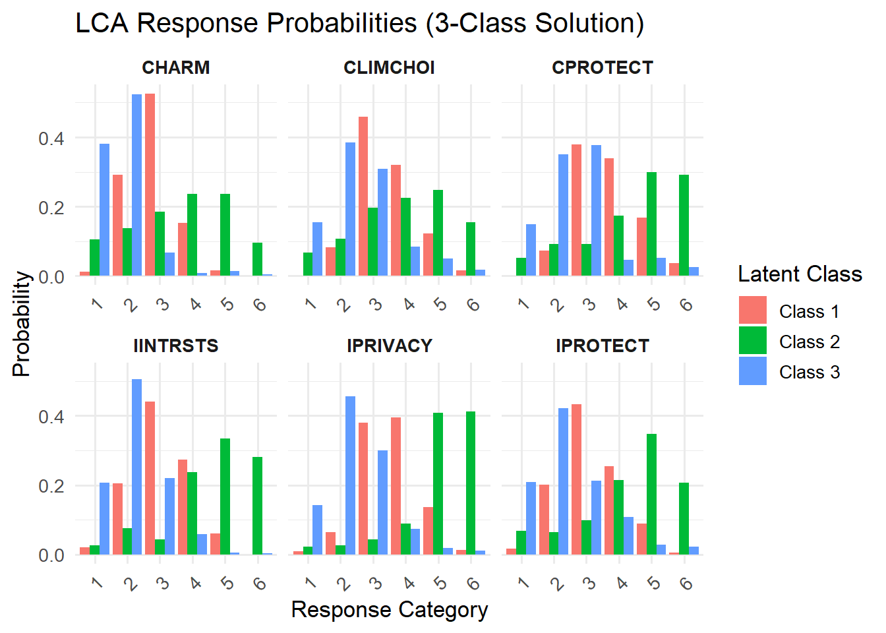
References
Peng, Roger D., and Elizabeth Matsui. 2016. The Art of Data Science: A Guide for Anyone Who Works with Data. Lulu.com. https://bookdown.org/rdpeng/artofdatascience/.
Wickham, Hadley, and Garrett Grolemund. 2017. R for Data Science: Import, Tidy, Transform, Visualize, and Model Data. "O’Reilly Media, Inc.". https://r4ds.had.co.nz/.
Xie, Yihui, J. J. Allaire, and Garrett Grolemund. 2018. R Markdown: The Definitive Guide. New York: Chapman; Hall/CRC. https://doi.org/10.1201/9781138359444.